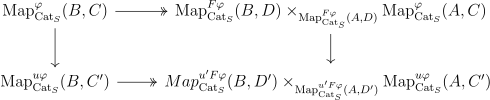
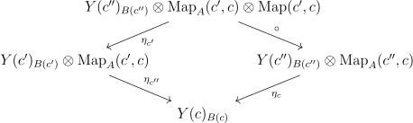

Definition 2.10. A map \(f\) has the right lifing property with respect to a morphism \(g\) denoted \(f\oslash g\), if we can always find lifts in the diagrams

Simplicial things come up in mathematics a lot. There are at least three (related) places of origin. The first is homotopy theory. Simplicial sets give a way of modeling the homotopy theory of topological spaces, and are often a convenient model for higher categories. The second is in homological algebra. There is the Dold Kan correspondence which identifies homotopy theories of chain complexes and simplicial objects, which suggests that simplicial objects can be useful for applying homotopical methods in nonabelian settings. The third place it arises is when studying monoids. Namely, the simplex category classifies monoids in a tensor category, meaning that tensor functors from \(\Delta \) coincide with monoid objects. This can be used in the construction of canonical resolutions from (co)monads, and in the formalism of monoidal \(\infty \)-categories.
The following are sources for this document:
Definition 2.1. A category \(C\) is presentable if it satisfies:
Definition 2.2. A category \(C\) is \(\kappa \)-accessible if it satisfies:
For regular cardinals \(\tau \gg \kappa \) if \(\tau _0 < \tau , \kappa _0 < \kappa \implies \tau _0^{\kappa _0} < \tau \)
Lemma 2.3. A \(\kappa \)-accessible category has a small set of \(\kappa \)-compact objects.
Proof. Let \(S\) be the generating set of \(\kappa \)-compact objects, and let \(X\) be a \(\kappa \)-compact object. Presenting \(X\) as a \(\kappa \)-filtered colimit of objects in \(S\), we learn that \(1_X\) must factor through one of the objects of \(S\). Thus, \(X\) is a retract of an object of \(S\). but any object of \(S\) has a set of subobjects since the \(S\)-Yoneda embedding is faithful, so there is a set of such \(X\). □
Lemma 2.4. \(\Delta ^{op}\) is sifted.
Proof. \(\Delta \) can be thought of as the full subcategory of categories generated by digraphs that are finite paths. Thus we need to show the category of objects over \(\Delta ^n\times \Delta ^m\) is connected. But given an object in this over category, we can adjoin a terminal object, which is sent to the terminal object of \(\Delta ^n\times \Delta ^m\), But then any two such maps over \(\Delta ^n\times \Delta ^m\) are connected via the inclusion of the terminal object. □
There is an involutions of \(\Delta \) given by reversing the arrows of the partial orders. The action of this on simplicial objects is called the opposite.
Let \(S,J\) be classes of arrows.
Definition 2.5. \(J\) satisfies the \(2\) out of \(3\) property with respect to \(S\) if in \(\Delta ^2\)-shaped diagram where the edges are in \(S\), if two of the arrows are in \(J\), the third is.
Definition 2.6. \(J\) satisfies the \(3\) out of \(4\) property with respect to \(S\) if in a \(\Delta ^1\times \Delta ^1\)-shaped diagram where the boundary edges are in \(S\), if three of the arrows on the boundary are in \(J\), the fourth is.
Definition 2.7. \(J\) satisfies the \(2\) out of \(6\) property with respect to \(S\) if in a \(\Delta ^3\)-shaped diagram where the boundary edges are in \(S\), if the arrows \(0 \to 2,1\to 3\) are in \(J\), the rest are.
If \(S\) is all the arrows, we supress it from the terminology. In this case, \(2\) out of \(6\) implies \(2\) out of \(3\) which implies \(3\) out of \(4\). \(2\) out of \(6\) is satisfied by isomorphisms.
Definition 2.8. A weakly saturated class of morphisms is one containing isomorphism that is closed under transfinite composition, coproducts retracts, and pushouts.
Definition 2.9. The class of (left, right, inner) anodyne extensions is the weakly saturated class of morphisms generated from the inclusions of (left, right, inner) horns \(\Lambda ^n_i \to \Delta ^n\).
The adjective \(n\)-trivial will mean that we add \(\partial \Delta ^m\to \Delta ^m, m<n\) to the generators of the saturated set. When \(n=\infty \), we can just say trivial, and when \(n=-2\), this doesn’t mean anything.
Definition 2.10. A map \(f\) has the right lifing property with respect to a morphism \(g\) denoted \(f\oslash g\), if we can always find lifts in the diagrams
If \(L\) is a class of morphisms in \(C\), define \(L^{\oslash }\) to be the class of morphisms \(\{ f| L\oslash f \}\). Dually define \(\phantom{}^{\oslash }J\). \(\phantom{}^{\oslash }J\) is always weakly saturated.
Lemma 2.11. \(\phantom{}^{\oslash }(J^{\oslash })^{\oslash } = J^{\oslash }\)
Proof. By definition \(\phantom{}^{\oslash }(J^{\oslash })\oslash J^{\oslash }\), showing \(J^{\oslash } \subset \phantom{}^{\oslash }(J^{\oslash })^{\oslash }\). But \(J \oslash \phantom{}^{\oslash }(J^{\oslash })^{\oslash }\) since \(J \subset \phantom{}^{\oslash }(J^{\oslash })\) giving the other inclusion (this works for any binary relation). □
\(\phantom{}^{\oslash }(J^{\oslash })\) is like a saturation of \(J\), and often agrees with the weak saturation of \(J\).
Lemma 2.12. \(f\oslash f\) iff \(f\) is an isomorphism.
Proof. Find a lift for the square \(1\times f\) to get an inverse. □
Lemma 2.13. Let \(F\dashv G\) be an adjunction. Then \(FX \oslash Y\) iff \(X \oslash GY\).
Proof. This is immediate from the definition. □
Definition 2.14. A map is a (left, right, inner) \(n\)-connected fibration if it satisfies the right lifting property with respect to \(n\)-trivial (left, right, inner) fibrations.
A fibrant simplicial set is sometimes called a Kan complex, and an inner fibrant simplicial set is sometimes called an \(\infty \)-category or \((\infty ,1)\)-category or quasicategory.
As \(\SSet \) is a presheaf category, we can get natural adjunctions by left Kan extension whenever we have a cosimplicial object in some cocomplete category \(C\). For example, the cosimiplicial category where \(\Delta ^n\) gets sent to the category generated by \(n\) morphisms in a row (also denoted \(\Delta ^n\)) gives the nerve functor with adjoint the homotopy category. The standard simplices in \(\Top \) or \(\CGHaus \) give geometric realization \(|\cdot |\) and the singular set \(S\). Another example is a cosimplicial object in \(\SSet \) given by taking an ordered set to the nerve its poset of subset. This extends to a functor \(\sd :\SSet \to \SSet \), which is essentially barycentric subdivision, and its right adjoint is denoted \(\Ex \). The study of this functor is due to Kan I believe. There is a natural map \(h: \sd X \to X\) called the last vertex map that sends a vertex in \(\sd \Delta ^n\) to the last vertex of the subset it corresponds to. The adjoint of this is a map \(X \to \Ex X\).
Proposition 2.15. Geometric realization of simplicial sets preserves finite limits in \(\CGHaus \), the category of compactly generated spaces.
Proof. First let’s think about products. We can reduce to the case of simplices as follows. Let \(K,L\) be simplicial sets. Since products distribute over colimits, we have \[|K \times L| =|\int ^mK_m\cdot \Delta ^m \times \int ^nL_n\cdot \Delta ^n| = |\int ^{m,n}K_m\cdot L_n\cdot \Delta ^m\times \Delta ^n| \]\[= \int ^{m,n}K_m\cdot L_n \cdot |\Delta ^m\times \Delta ^n| = \int ^{m,n}K_m\cdot L_n \cdot |\Delta ^m|\times |\Delta ^n| = \int ^mK_m \cdot |\Delta ^m| \int ^n L_n \cdot |\Delta ^n|\]\[ = |K|\times |L|\]
Now the natural map \(|\Delta ^n \times \Delta ^m|\to |\Delta ^n|\times |\Delta ^m|\) is a continuous map of compact Hausdorff spaces, so it a homeomorphism iff it is a bijection. Suppose we have an element of \(|\Delta ^n|\times |\Delta ^m|\), given by a sequence of numbers \(c_i,d_j\), which are the components for the standard embedding of a simplex. Define \(c_i' = \sum _{k\leq i} c_i\) and similarly for \(d'_j\), and order the set consisting of \(c_i',d_j'\). Now define a simplex on vertices by going through the ordering and everytime you run into a number that is one of the \(c'_i\), increment the index of the \(\Delta ^n\) vertex, and similarly for the \(d'_i\) and the \(\Delta ^m\) vertex. It is easy to see that this is the unique nondegenerate simplex hitting \(c_i,d_j\), and it hits it in a unique point by taking the linear combination that is the incremental differences of the ordered set of numbers.
Equalizers are easier. First observe that an inclusion of simplicial sets induces an inclusion of a closed set upon realizing. This implies that the comparison map is an inclusion. For surjectivity one has to observe that for any point equalized in the realization, the nondegenerate simplex whose interior it is in is equalized, so it is in the image. □
Lemma 2.16. There is a homeomorphism \(|\sd \Delta ^n| \to |\Delta ^n|\), which realizes \(|\sd \Delta ^n|\) as the barycentric subdivision of \(|\Delta ^n|\). Moreover, this is naturally homotopic to \(|h|\) where \(h\) is the last vertex map.
Proof. A zero simplex of \(\sd \Delta ^n\) is given by a subset of the vertices \(v_i\) of \(\Delta ^n\), which we can send to the barycenter of that set in \(|\Delta ^n|\). We can then extend to \(\sd \Delta ^n\) by linear interpolation. Rewrite \(\sum _i \alpha _i v_i = \sum _j t_j X_j\), where the \(t_j\) are in increasing order and \(X_j\) is a sum of \(v_i\)s, so we have just regrouped the \(v_i\)s with the same coefficient into one \(X_j\). Define \(N_j = \sum _{k\geq j} (n_j+1)\) where \(n_j\) is the number of \(v_i\) in \(X_j\).
Then \(\sum _j t_jX_j = \sum _j (t_j-t_{j-1})N_j(\frac{1}{N_j}\sum _{k\geq j} X_k)\). \((\frac{1}{N_j}\sum _{k\geq j} X_k)\) is a barycenter, and \(\sum _j (t_j-t_{j-1})N_j = 1\) so we have written (uniquely) any element of \(\Delta ^n\) as an element of \(|\sd X|\). □
2.1. Generators of anodyne morphisms.
Lemma 2.17 (Generators of \(n\)-trivial inclusions). The \(n\)-trivial maps are those inclusions \(X\to Y\), where \(Y/X\) has nondegenerate cells in dimensions \(\leq n\). .In particular the saturation of the inclusions \(\partial \Delta ^n \subset \Delta ^n\) is all inclusions of simplicial sets.
Proof. It is easy to see the sets described are saturated. Given any inclusion \(X \subset Y\), let \(Y_n(X)\) denote the preimage of the n-skelaton of \(Y/X\) as a pointed simplicial set. Then since \(Y_{-1}(X) = X, Y_n(X) \subset Y_{n+1}(X), \cup _i Y_{i}(X)=Y\), it suffices to show that the inclusion \(Y_{n-1}(X) \to Y_{n}(X)\) is generated by \(\partial \Delta ^n \subset \Delta ^n\). But there is a pushout diagram

where alpha runs over all nondegenerate \(n\)-cells in \(Y/X\). □
Note: the inclusions \(\partial \Delta ^n\times \Delta ^m \cup \Delta ^n \times \partial \Delta ^m \subset \Delta ^n\times \Delta ^m\) should also generate inclusions.
Proposition 2.18 (Generators of left anodyne extensions). The three classes of maps below generate the left anodyne extensions:
Proof. \((2) \iff (3)\): This follows from Lemma 2.17 after observing that the class of inclusions \(X \to Y\) for which \((3)\) is true is saturated.
\((2) \implies (1)\): Let \(X_n\) be \(\Delta ^1\times \partial \Delta ^n \cup \Lambda _1^1 \times \Delta ^n\), and consider the map \(X_n \to \Lambda _i^{n+1}\) induced by the endomorphism of \(X_n\) determined on vertices by sending \((1,j)\) to \((0,j)\) for \(j \neq i\). The pushout along this map of the inclusion \(X \to \Delta ^1\times \Delta ^n\) contains \(\Delta ^{n+1}\) as a retract relative to \(\Lambda _i^{n+1}\).
\((1)\implies (2)\): First notice that the \(n-1\) skeleta agree, so there is only need to add \(n+1\)-simplices. Let \(\sigma _i\) denote the \(n+1\) simplex of \(\Delta ^1\times \Delta ^n\) where the \(\Delta ^1\) component starts being \(1\) on the \(i^{th}\) vertex. Then in decreasing order of \(i\), extend along \(\Lambda _i^n\) to \(\sigma _i\) to build up \( \Delta ^1\times \Delta ^n\) out of \(\Delta ^1\times \partial \Delta ^n \cup \Lambda _1^1 \times \Delta ^n\) □
Corollary 2.19 (Generators of anodyne extensions). The three classes of maps below generate the anodyne extensions:
Proposition 2.20 (Generators of inner anodyne extensions). The classes of maps below generate the inner anodyne extensions:
Proof. \((1) \implies (2)\): First observe that the \(n-1\)-skeleton agrees with that of \(\Delta ^2\times \Delta ^n\). Let \(\sigma '_i,i>0\) be the nondegenerate \(n+1\)-simplices projecting onto \(s_i\Delta ^n\), that switches from \(0\) to \(2\) in \(\Delta ^2\) at the \(i^{th}\) vertex. Let \(\sigma _{i,0}\) be the nondegenerate \(n+2\)-simplex projecting to \(s_is_i\Delta ^n\), and let \(\sigma _{i,1},i>0\) be the nondegenerate \(n+2\)-simplex projecting to \(s_{i}s_{i-1}\Delta ^n\). Then in descending order of \(i\), we can attach \(\sigma '_i\), then \(\sigma _{i,0}\), then \(\sigma _{i,1}\) until we have build up \(\Delta ^2\times \Delta ^n\).
\((2) \iff (3)\): This follows from Lemma 2.17 after observing that the class of inclusions \(X \to Y\) for which \((3)\) is true is saturated.
\((2) \implies (1)\): Fix \(0<i<n\), and consider the endomorphism of \(\Delta ^2\times \partial \Delta ^n \cup \Lambda _1^2 \times \Delta ^n \subset \Delta ^2\times \Delta ^n\), with image consisting of the vertices \((0,j), j<i\), \((1,i-1)\), and \((2,j)\), for \(j\geq i\), where all the other vertices are sent to \((1,i-1)\). The image is \(\Lambda _i^n\), and the pushout of the inclusion into \(\Delta ^2\times \Delta ^n\) along this endomorphism retracts onto the inclusion \(\Lambda _i^n \to \Delta ^n\). □
Corollary 2.21. A simplicial set is an \(\infty \)-category iff the map \(\Fun (\Delta ^2,C)\to \Fun (\Lambda ^2_1,C)\) is a trivial fibration.
Proof. This follows from Lemma 2.20. □
Corollary 2.22. If \(K\subset L\) is (left, right, inner) anodyne and \(Y \subset X\), then \(K\times X \cup L\times Y \to L\times X\) is (left, right, inner) anodyne.
Proof. Let us do the proof for left anodyne extensions, the proofs in other cases are similar. Since the inclusions \(K\subset L\) for which the lemma is true are saturated, we reduce to the case when it is \(\Delta ^1\times \partial \Delta ^n \cup \Lambda _1^1 \times \Delta ^n \subset \Delta ^1\times \Delta ^n\). But now there is a commutative square:

The lower map by \((3)\) of Corollary 2.19 is anodyne. □
A closed monoidal category is one where there are internal homs that are right adjoint to tensoring. This makes the category self-enriched. A \(V\)-enriched category with a (left) lax monoidal functor to \(C\) has an underlying \(C\)-enriched category, and in this case of self enrichment, the underlying category is the original, and one can use an enriched Yoneda lemma to upgrade the internal hom adjunction to an enriched adjunction. In a \(V\) enriched category \(C\) we can use an underline such as \(\ul{\Hom }(a,b)\) or \(\ul{C}(a,b)\) to denote \(V\)-homs. We say cartesian closed if the monoidal structure comes from products. The presheaf category of a category \(C\) is always a cartesian closed symmetric monoidal category by the formula \(\Map (X,Y)_Z = \Hom (X\times Z,Y)\), where \(Z \in C\). In particular this works in \(\SSet \). Moreover, there is a natural \(2\)-equivalence between \(\Set ^{C^{op}}\)-enriched categories and functors \(C^{op} \to \Cat \). The internal hom is also denoted \(Y^X\).
For every monoidal cateogory \(V\), the functor \(X \mapsto \Hom (1,X)\) is right lax monoidal, so there is an underlying category. We will use \(\Hom (a,b)\) to talk about the morphisms in the underlying category.
Given a complete and cocomplete cartesial closed symmetric monoidal category \(C\) we can form a symmetric monoidal category \(C_+\) of based objects with a map from the terminal object. The monoidal structure is the smash product, and the functor of adding a disjoint basepoint is strongly symmetric monoidal.
Now suppose \(C,D\) are \(V\)-enriched, where \(V\) is concrete, and suppose that we have an adjunction \(\adjunction{F}{C}{D}{G}\) on the underlying categories. We would like a situation where this can be upgraded to an enriched adjunction.
Definition 2.23. Let \(\ul{C}\) be \(V\)-enriched. \(\ul{C}\) is tensored if there is an isomorphism natural in all \(3\) variables: \(\ul{C}(a\otimes b,c) \cong \ul{V}(a,\ul{C}(b,c))\).
In other words, there is an enriched left adjoint of \(\ul{C}(b,-)\) for every \(b\).
Definition 2.24. Let \(\ul{C}\) be \(V\)-enriched. \(\ul{C}\) is cotensored if there is an isomorphism natural in all \(3\) variables: \(\ul{C}(b,\hom (a,c)) \cong \ul{V} (a,\ul{C}(b,c))\).
In other words, there is an enriched right adjoint of \(\ul{C}(-,c)\) for every \(b\).
Sometimes people also say copower and power instead of tensor and cotensor.
Definition 2.25. A two-variable adjunction is a triple of functors \(F: M\times N \to P\), \(G:M^{op}\times P \to N\), \(H: N^{op}\times P \to M\) so that there are natural isomorphisms \(\Hom (F(a,b),c) = \Hom (b,G(a,c)) = \Hom (a,H(b,c))\).
We can think of this as a family of adjunctions parameterized by \(a\) (or symmetrically in \(b,c\)). If \(\ul{C}\) is tensored and cotensored, there is a two-variable enriched adjunction \(\ul{C}(b,\hom (a,c)) \cong \ul{C}(a\otimes b,c) \). Moreover \(\otimes \) is unital and associative, essentially giving an action of \(\ul{V}\) on \(\ul{C}\).
Construction 2.25.1. Suppose that \(F:M\times N \to P\) is a functor, and \(P\) has pushouts. Then the pushout-product denoted \(\hat{F}\) is a functor on the arrow categories defined on arrows \(i,j\) by the diagram below.

The pushout-product of the initial map to \(a\) with a map \(b \to c\) is just the map \(F(a,b) \to F(a,c)\). Suppose that there is a two-variable adjunction \(F,G,H\) between \(M,N,P\), and suppose that \(M\) has pushouts and \(N,P\) have pullbacks. Then Construction 2.25.1 applied to \(F,G^{op},H^{op}\) give an induced \(2\)-variable adjunction \(\hat{F},\hat{G},\hat{H}\).
Lemma 2.26. If \(F,G,H\) are a two-variable adjunction, then \(\hat{F}(f,g)\oslash h\) iff \(g \oslash \hat G(f,h)\) iff \(f \oslash H(g,h)\).
Proof. This follows from construction and Lemma 2.13. □
Lemma 2.27. Suppose that \(C,D\) are tensored and cotensored over \(V\), and there is an adjunction \(\adjunction{F}{C}{D}{G}\) of functors on the underlying categories. Then the following data determine each other:
Moreover, in this case, \(G\) preserves the cotensoring and \(F\) preserves the tensoring.
Proof. It suffices to show \((1) \iff (2)\) as \((3)\) is dual to \((2)\). The point is to use the Yoneda lemma. For clarity, \(\ul{F}\) will denote enriched functors. If the adjunction is enriched, then \(\ul{D}(v\otimes \ul{F}m,n) = \ul{V}(v,\ul{D}(Fm,n)) = \ul{V}(v,\ul{C}(m,\ul{G}(n)) )= \ul{C}(v\otimes m,\ul{G}(n)) = \ul{D}(\ul{F}(v\otimes m),n)\). Conversely, if \((2)\) is satisfied, and \(U\) denoted the forgetful functor on \(\ul V\), then we can produce the counit via \(V(c,\ul C(Ga,Ga)) = C(c\otimes Ga,Ga) = D(F(c\otimes Ga),a) = D(c\otimes FGa,a) = V(c,\ul D(FGa,a))\) and the unit via \(V(a,\ul D(Fb,Fb)) = D(a\otimes Fb,Fb) = D(F(a\otimes b),Fb) = D(a\otimes b, GFb) = V(a,\ul D(b,GFb))\). □
We can transport enrichments and the property of being cotensored or tensored over \(V\) to \(V'\) provided we have an adjunction \(\adjunction{F}{V}{V'}{G}\) where the left adjoint is strongly monoidal. Moreover the \(V'\) enrichments on \(V,V'\) are compatible with the adjunction in this case.
Lemma 2.28. \(C^{D^{op]}}\) is enriched over \(\Set ^{D^{op}}\) and is tensored if \(C\) is cocomplete and cotensored if \(C\) is additionally complete.
Proof. If \(A \in \Set ^{D^{op}}, B \in C^{D^{op}}, d \in D\), define \((A\otimes B)_d = A_d\cdot B_d\), where \(\cdot \) is the copower, and observe that it is the tensoring, if the enrichment is given by \(\ul{\Hom }(B,C)_d = \Hom (d\otimes B,C)\). If \(C\) is complete and \(A=\colim _J d_j\), then define \(B^A\) by \(\lim _J B^{d_j}\), where \(B^{d_j}\) is given by the power \(B^{d_j}_{d} = \prod _{\Hom (d,d_j)}B\). This is a right adjoint of \(A\otimes (-)\). □
2.3. Basics of Simplicial Sets.
Corollary 2.29. Let \(K \subset L\) be an inclusion, and \(X \to Y\) a (left, right, inner) fibration. Then the natural map \(\Map (L,X) \to \Map (K,X)\times _{\Map (K,Y)}\Map (L,Y)\) is a (left, right, inner) fibration.
Proof. By definition \(A \to B\) has the left lifting property with respect to the map above iff \(A\times L \cup B \times K \subset B\times L\) has the left lifting property with respect to \(X \to Y\). Thus this follows from Corollary 2.22. □
Corollary 2.30. Let \(K \subset L\) be a (left, right, inner) anodyne extension, and \(X \to Y\) a (left, right, inner) fibration. Then the natural map \(\Map (L,X) \to \Map (K,X)\times _{\Map (K,Y)}\Map (L,Y)\) is a trivial fibration.
Proof. This has the same proof as Corollary 2.29. □
Lemma 2.31. For a (left, right) fibrant simplicial set, simplicial homotopy of verticies is an equivalence relations.
Proof. If \(g\) is a homotopy \(x\to y\), then \((g,1_y,\cdot ) = \Lambda _0^2\) can be filled into \(\Delta ^2\), giving a homotopy \(y \to x\). \(s_0x\) gives reflexivity, and if \(f:x \to y\) and \(g:y \to z\) are homotopies, then by extending \((g,\cdot ,f)\) to \(\Delta ^2\), we get a homotopy \(x \to z\). □
Corollary 2.32. Let \(X\to Y\) be a (left, right) fibration, and let \(K \to L\) be a cofibration. Then homotopies of maps from \(L\) to \(X\) covering \(Y\) relative to \(K\) is an equivalence relation.
Define \(\pi _0(X)\) to be the connected components of \(X\).
Simplicial sets generalize categories.
Lemma 2.33. The nerve is fully faithful on \(1\)-categories. It’s essential image is
Proof. First we will show that the first two descriptions of the essential image are the same. Suppowe we have a \(2\)-coskeletal \(\infty \)-category. Then we immediately get that there is a unique lift for inner horns when \(n>3\), since the inclusions of those horns are identities on the \(2\)-skelaton. If we have two composites of \(g\circ f\), \(\sigma ,\sigma '\) lifting both \(\Lambda _1^3 = (s_0 g,\cdot ,\sigma ,s_1f)\) and \(\partial \Delta ^3 = (s_0g, \sigma ,\sigma ', s_1f)\) to \(\Delta ^3\), we see by uniqueness of the lift on \(\Lambda _1^3\) that \(\sigma = \sigma '\).
Conversely given a simplicial set with unique lifts on inner horns, it is certainly an \(\infty \)-category, so it suffices to show it is \(2\)-coskelatal. To do this, it suffices to show that for \(n>2\), we can always extend maps along \(\partial \Delta ^n \subset \Delta ^n\). Uniqueness will follow from the fact that it extends an inner horn. This can be done inductivly on \(n\). Since \(n>2\), we can restrict to two different inner horns and extend to \(\Delta ^n\). Then the uniqueness of lifts for smaller \(n\) will show that the two extensions agree on the boundary, and are in particular extensions on \(\partial \Delta ^n\).
Now given such a simplicial set, rebuild the category in the obvious way. Namely, the verticies are objects, the \(1\)-simplices arrows (with the identity as the degenerate ones). The unique lifting on inner \(2\) horns gives a unique composition, the \(3\)-skelaton gives associativity, and the \(2\)-coskelativity says that maps between such simplicial sets are determined by preserving \(1\)-categorical structure.
Being a category implies the Segal condition, which in turn implies unique lifting of inner horns. □
Lemma 2.34. A category is a Kan complex iff it is a groupoid.
Proof. \(n\)-horns for \(n>2\) can always be extended for a category, and \(1\)-horns can be extended for any simplicial set. Moreover, we see easily see that extending \(\Lambda _2^2\) and \(\Lambda _0^2\) is equivalent to every map having (left and right) inverses. Of course, if every map has a left inverse, it is already a groupoid by associativity. □
There is an explicit description of the homotopy \(1\)-category of an \(\infty \)-category. Namely, we call the \(0\)-simplices objects, \(1\)-simplices arrows. Given simplicial sets \(X,Y\), the join \(X\star Y\) is the simplicial set where its \(n\)-simplices start in \(X\) and end in \(Y\).
Let \(x,y\) be objects in an \(\infty \)-category. Then the left mapping space from \(\LMap (x,y)\) is the simplicial set whose \(n\)-simplices are the maps \(\Delta ^n\star \Delta ^0\) sending \(\Delta ^n\) to \(x\) and \(\Delta ^0\) to \(y\).
Lemma 2.35. \(\LMap (x,y)\) is right fibrant.
Proof. Extending \(\Lambda _i^n \to \LMap (x,y)\) to \(\Delta ^n\) is the same as extending \(\Lambda _i^{n+1} = \Lambda _i^n \star \Delta ^0 \to X\) to \(\Delta ^{n+1}=\Delta ^n\star \Delta ^0\), which is possible when \(0 < i \leq n\). □
Being left fibrant will be later shown to be equivalent to being a Kan complex. Two maps are left homotopic if they are the same in \(\pi _0(\LMap (x,y))\). This is an equivalence relation. They are homotopic if there is a map \(\Delta ^1\times \Delta ^1\) restricting to identities on \(\partial \Delta ^1\times \Delta ^1\) and \(f,g\) on \(\Delta ^1\times \partial \Delta ^1\).
Lemma 2.36. Two maps in an \(\infty \)-category are left homotopic iff they are right homotopic iff they are homotopic.
Proof. Let \(\sigma \) be a left homotopy from \(f \to g\), meaning \(\partial \sigma = (g,f,1)\). Then extend the horn \((\sigma ,s_0g,\cdot ,s_0s_0d_1f)\) to \(\Delta ^3\), \(d_2\) of which is a right homotopy. Left homotopy clearly implies homotopy by having one of the \(2\)-cells be degenerate. Conversely, if \(g,f\) are homotopic, they are both either left or right homotopic to the third map in the homotopy, and so by transitivity an the fact that left and right homotopies agree, \(g,f\) are left homotopic. □
Lemma 2.37 (Homotopy \(1\)-category of an \(\infty \)-category). For an \(\infty \)-category \(C\), the homotopy \(1\)-category is given by the same objects, where \(\pi _0(\LMap (x,y))\) is the homotopy classes of maps from \(x\) to \(y\).
Proof. A map to a \(1\)-category certainly factors through \(\pi _0\LMap (x,y)\). We will show we can build a \(1\)-category out of \(\pi _0(\LMap (x,y))\) as the Hom sets. By Lemma 2.36 we can use any notion of homotopy. Since \(\Map (\Delta ^2,X) \to \Map (\Lambda _2^1)\) is a trivial Kan fibration by Corollary 2.30, any two composites are homotopic, so there is a well-defined composite up to homotopy. For associativity, if \(f\) realizes a composite \(a \circ b\), \(g\) realizes \(a\circ (b\circ c)\), \(f'\) realizes \(b\circ c\), then consider the map from \(\Lambda _{2}^{3}\) given by \((f,g,\cdot ,f')\). Extending to \(\Delta ^{n+1}\) and taking \(d_{n+1}\), we see that \(a\circ (b\circ c)\) is a realized as a composite of \((a\circ b)\circ c\). Any map to a \(1\)-category then factors uniquely through this category, so it is \(h(C)\). □
We define the homotopy \(1\)-category of spaces, denoted \(h(\Space )\) to be the category of Kan complexes and homotopy classes of maps between them. This will later be shown to be the homotopy \(1\)-category of a suitable \(\infty \)-category of spaces, \(\Space \). Similarly we can define \(h(\Space _*)\) using pointed Kan complexes.
There is a homotopy category of an \(\infty \)-category that is enriched over \(h(\Space )\), which is a better one.
Lemma 2.38. \(f:X \to Y\), \(g: X' \to Y'\) are inner fibrations iff \(f\star g\) is as well.
Proof. If we are trying to lift the inclusion \(\Lambda ^n_i \to \Delta ^n\) along \(f\star g\), if \(\Lambda ^n_i\) lands in either \(Y\) or \(Y'\), then this lifts iff \(f,g\) are inner fibrations. Otherwise, we decompose \(\Delta ^n\) along where it splits between \(Y\) and \(Y'\) as \(\Delta ^i\) and \(\Delta ^{n-i-1}\), and the map \(\Delta ^i\star \Delta ^{n-i-1}\) gives the desired lift. □
We define the left cone of a simplicial set \(K\) to be \(\Delta ^0\star K\), denoted \(K^{\triangleright }\), and similarly \(K^{\triangleleft } = K\star \Delta ^0\) is the right cone. The cone point is the \(\Delta ^0\) inside of it.
Lemma 2.39 (Overcategories). Let \(p:K \to S\) be a map of simplicial sets. Then There is a simplicial set \(S_{/p}\) with the universal property \(\Hom _{\SSet }(Y, S_{/p}) = \Hom _{p}(Y\star K, S)\). \(\Hom _{p}\) denotes maps extending \(p\).
Proof. One can define \(S_{/p}\) by \((S_{/p})_n = \Hom _{p}(\Delta ^n\star K, S)\) and note that \(\star \) commutes with colimits in each variable to deduce the universal property. □
Dually the under category is defined by the same universal property except with \(K \star Y\) instead of \(Y \star K\).
Lemma 2.40. Suppose \(f:A_0\subset A, g:B_0 \subset B\). and either \(f\) is right anodyne or \(g\) is left anodyne. Then the inclusion \((A_0\star B)\coprod _{A_0\star B_0} (A\star B_0) \subset A\star B\) is inner anodyne.
Proof. Assume \(f\) is right anodyne, as the other case is dual. Then the class of \(g,f\) such that the lemma is true is saturated, so it suffices to assume \(f\) is \(\Lambda ^n_i \to \Delta ^n\) and \(g\) is \(\partial \Delta ^m \to \Delta ^m\). Then \(h\) is just the inclusion of \(\Lambda ^{n+m+1}_i \subset \Delta ^{n+m+1}\). □
The same proof yields
Lemma 2.41. Suppose \(f:A_0\subset A, g:B_0 \subset B\). and \(f\) is left anodyne. Then the inclusion \((A_0\star B)\coprod _{A_0\star B_0} (A\star B_0) \subset A\star B\) is left anodyne.
Proposition 2.42. Suppose we are given a diagram of simplicial sets \(A \subset B \xrightarrow{p} X \xrightarrow{q} S\) where \(q\) is an inner fibration. Let \(r = q \circ p\), and \(p_0, q_0, r_0\) be the restrictions to \(A\) of \(p,q,r\). Then the induced map \(X_{p/} \to X_{p_0/}\times _{S_{r_0/}}S_{r/}\) is an inner fibration. If in addition, \(q\) is a left fibration, then the map \(X_{/p} \to X_{/p_0}\times _{S_{/r_0}}S_{/r}\) is as well.
Corollary 2.43. The map \(X_{p/} \to X_{p_0/}\) is a left fibration.
Proof. Let \(S = \Delta ^0\) in Proposition 2.42. □
Similarly, we can obtain
Proposition 2.44. Suppose we are given a diagram of simplicial sets \(A \subset B \xrightarrow{p} X \xrightarrow{q} S\) where either \(A \subset B\) is right anodyne and \(q\) is an inner fibration or \(A\subset B\) is anodyne and \(q\) is a left fibration. Let \(r = q \circ p\), and \(p_0, q_0, r_0\) be the restrictions to \(A\) of \(p,q,r\). Then the induced map \(X_{p/} \to X_{p_0/}\times _{S_{r_0/}}S_{r/}\) is a trivial fibration.
2.4. Left fibration characterization of Kan fibrations.
Kan fibrations are left fibrations where the pushforward map on fibres are equivalences. This takes some effort to prove (can be viewed as a coherence type result), and as a special case includes the fact that left fibrant simplicial sets are Kan complexes. The main result is Proposition 2.52.
Left anodyne maps can be given by ‘left deformation retracts’:
Lemma 2.45. Let \(p:X \to S\) be a map with a section \(s\) and a fibrewise homotopy \(h\) from \(s\circ p\) to \(1\). Then \(s\) is left anodyne.
The following lemma is a \(1\)-categorical version of the type of coherence we are looking for. By using it in families, we will build our way to the result.
Lemma 2.46. If \(p:C \to D\) is a left fibration of \(\infty \)-categories and \(f\) is a morphism in \(C\) such that \(pf\) is an equivalence in \(D\), then \(f\) is an equivalence. Furthermore, given an equivalence \(x \to p(y)\), there is a lift to an equivalence \(\tilde{x} \to p(y)\).
Proof. If \(pf\) has a left inverse \(g\), we can lift \(g\) to a left inverse \(\tilde{g}\) in \(C\) of \(f\). But \(g\) has a left inverse in \(D\), \(f'\), which we can lift to see that \(\tilde{g}\) is left invertible. But \(C\) is an \(\infty \)-category, so \(g\) being left invertible is equivalent to \(f\) being right invertible.
If \(a:x \to p(y)\) is an equivalence, we can choose a homotopy inverse \(b\) and a lift of \(b\) \(\tilde{b}\) from \(y\) to an object \(\tilde{x}\). Then we can lift a \(2\)-simplex exhibiting \(a\) as a left inverse of \(b\) to obtain the desired lift of \(a\), which is an equivalence by the first part. □
The following consequence is quite important.
Proposition 2.47. Let \(C\) be an \(\infty \)-category and \(f\) a morphism. \(f\) is an equivalence iff for every \(n \geq 2\) and every map \(f_0: \Lambda ^n_0 \to C\) that sends \(\Lambda ^{\{0,1\}}\) to \(f\), there exists an extension to \(\Delta ^n\).
Proof. The lifting problem is equivalent to a lifting problem for the diagram

Because \(f\) is an equivalence and \(C_{\partial \Delta ^{n-2}} \to C\) is a left fibration by Corollary 2.43, the morphism in the diagram is an equivalence in \(C_{\partial \Delta ^{n-2}}\) by Lemma 2.46. By the same lemma, we can produce the desired lift since the right vertical map is a right fibration.
For the converse, if the extensions exist, then \(f\) has a left inverse by extending \((\cdot ,1,f)\) along \(\Lambda ^2_0 \subset \Delta ^2\), giving a \(2\)-simplex \(a\) with \(d_0a = f^{-1}\). By extending \((\cdot ,s_0 f,s_1 f^{-1},a)\) along \(\Lambda ^3_0 \subset \Delta ^2\), we obtain a right inverse of \(f\). □
Corollary 2.48. TFAE for an \(\infty \)-category \(C\):
This is the starting point for an analogous statement for left fibrations, namely the Grothendieck construction/straightening unstraightening equivalence.
We will need to construct the inverse on the \(1\)-categorical level. Let \(X \to S\) be a left fibration, and \(f:s \to t\) an arrow in \(S\). Then if \(X_s\) i the fibre of \(s\), by creating a lift as in the diagram

we obtain a map from \(X_s \to X_{t}\). Moreover \(\Map (\Delta ^1\times X_s,X) \to \Map (\Lambda ^1_1\times X_s,X)\times _{\Map (\Lambda ^1_1\times X_s,S)}\Map (\Delta ^1\times X_s, S)\) is a trivial fibration by Corollary 2.30, so in particular, there is a unique lift in the homotopy category of spaces, which will be denoted \(f_!\).
Lemma 2.49. Given a left fibration \(X \to S\), the assignment \(s \to X_s\), \(f \to f_!\) defines a functor \(hS \to h(\Space )\).
Proof. Because \(X \to S\) is an inner fibration, composition lifts along it, showing that \(f_!\) preserves composition. □
Lemma 2.50. Suppose \(p:S \to T\) is a left fibration and \(T\) is a Kan complex. Then \(p\) is a Kan fibration.
Proof. \(S\) is also a Kan complex, since \(S\) is left fibrant. We need to show that for any anodyne inclusion \(A \subset B\), the map \(S^B \to S^{A} \times _{T^A} T^B\) is surjective on vertices. But it is a homotopy equivalence and a left fibration by Corollary 2.29, so is surjective since the functor from Lemma 2.49 must land in nonempty spaces. □
Lemma 2.51. Suppose \(p:S \to T\) is a left fibration and for each \(t \in T\), \(S_t\) is contractible. Then \(p\) is a trivial Kan fibration.
Proof. We would like to show the inclusion \(\partial \Delta ^n \subset \Delta ^n\) has the left lifting property with respect to \(p\). When \(n=0\), the lifting property clearly holds. By pulling back along the simplex we are trying to lift, we can assume \(T\) is \(\Delta ^n\), in particular, \(S,T\) are \(\infty \)-categories. Choose a homotopy \(h\) from the inclusion \(\partial \Delta ^n \subset T\) to the terminal object of \(T\), and create a lift \(h'\) in \(S\). We would like to extend \(h'\) from \(\partial \Delta ^n\times \Delta ^1\) to \(\Delta ^n\times \Delta ^1\). We can extend \(\partial \Delta ^n\times 1\) to \(\Delta ^n\) by using the fact that the fibres are contractible. The rest of the cells that need to be added are inner horns (see Lemma 2.18) except for the last cell. But this can be filled in since its restriction to the initial edge lies in a fibre, so we can use Proposition 2.47. □
We come to the main result.
Proposition 2.52. TFAE for a left fibration \(p:S \to T\):
Proof. For \(1 \implies 2\), since \(p\) is a left and right fibration, every morphism \(f\) induces a covariant \(f_!\) and contravariant \(f^*\), which are inverse to each other in the homotopy category of spaces.
For \(2 \implies 1\), it suffices to show that \(p\) is a right fibration. It suffices to show that the map \(q:S^{\Delta ^1}\to S^{\Lambda ^1_0}\times _{T^{\Lambda ^1_0}}T^{\Delta ^1}\) is a trivial Kan fibration. We already know it is a left fibration, so by Lemma 2.51, we just need to show that the fibres are contractible. For an edge \(f: t \to t'\) in \(T\), we can pullback \(q\) along the map \(S_{t'} \to S^{\Lambda ^1_0}\times _{T^{\Lambda ^1_0}}T^{\Delta ^1}\) given by picking \(f\) , and it will suffice to show the fibres of the pullback \(X \to S_{t'}\) are contractible for each \(f\). But the natural map \(X \to S_{t}\) is a trivial Kan fibration since \(p\) is a left fibration. In particular \(X\) is a Kan complex. By Lemma 2.50, \(X \to S_{t'}\) is a Kan fibration. The map \(f_!\) is obtained by taking a section of the map \(X \to S_{t}\) and composing with the map \(X \to S_{t'}\), so in particular we learn that the map \(X \to S_{t'}\) is an equivalence. Since it is an equivalence and a Kan fibration, it is a trivial Kan fibration. □
2.5. Basics of \(\infty \)-categories.
The purpose of this section is to produce a theory of minimal inner fibrations analogous to that in Section 3.1.
Given a diagram

where \(p\) is an inner fibration, we say that \(f,f':B\to X\) are homotopic relative to \(A\) over \(S\) if they are equivalent in the \(\infty \)-category that is the fibre of the map \(X^B\to X^{A}\times _{S^A}S^B\)
Let \(C\) be a presentable category and \(S\) a set of morphisms. The weak saturation of \(S\) is obtained from \(S\) via pushouts, transfinite compositions, and retracts. Here we prove that after possibly enlarging \(S\), the weak saturation is generated by a small set of morphisms just from pushouts and transfinite compositions.
The following is a generalization of a transfinite chain of morphisms.
Definition 2.53. Let \(C\) be a presentable category and \(S\) be a collection of morphisms in \(C\). An \(S\)-tree in \(C\) is the following data:

where \(f \in S\).
We will often use just \(\{Y_a\}_{a \in A}\) to denote an \(S\)-tree. Suppose that \(B \subset A\) is a downward closed subset. Then \(\{Y_a\}_{a \in B}\) is an \(S\)-tree. We can also let \(B_{\alpha } = B \cup \{\beta \in A | \beta \leq \alpha \}\), and \(\{(Y_{B_\alpha })_{\alpha \in A-B}\}\) is an \(S\)-tree.
\(Y_B\) denotes the colimit \(\lim _{\alpha \in B}Y_{\alpha }\) in \(C_{/X}\). In particular \(Y_{\phi } = X\).
Let \(\kappa \) be a regular cardinal. An \(S\)-tree is \(\kappa \)-good if the diagram consists of \(\kappa \)-compact objects and for each \(\alpha \in A\), the set \(\{\beta \in A| \beta <\alpha \}\) is \(\kappa \)-small.
Given an \(S\)-tree for \(X\), we can pushout along a map \(f:X \to X'\) to get an \(S\)-tree for \(X'\) called the associated \(S\)-tree. Note that \(S\)-trees naturally arise from transfinite sequences of morphisms \(X \to Y_0 \to Y_1 \to \dots \).
Lemma 2.54. Given a presentable category \(C\), \(S\) a set of morphisms, and \(\{Y_\alpha \}_{a \in A}\) an \(S\)-tree. then for any \(A'' \subset A' \subset A\) downward closed, the map \(Y_{A''} \to Y_{A'}\) is a morphism in the weak saturation of \(S\).
Proof. It suffices by the earlier observations to assume that \(A'' = \phi \) and \(A = A'\). Write \(A\) as the union of a transfinite sequence of downward closed subsets obtained by adding one minimal element not already there at a time. The colimit of each of these is obtained from the previous one by a pushout along a morphism in \(S\), so the map is a transfinite composition of these. □
We can modify our \(S\)-trees to become \(\kappa \)-good under reasonable hypotheses. The following lemma is the whole reason we need the notion of an \(S\)-tree: it is not true that the modification is totally ordered if the original tree is.
Lemma 2.55. Let \(C\) be a presentable caegory, \(\kappa \) a regular cardinal, and let \(S\) be a collection of morphisms between \(\kappa \)-compact objects. Suppose that \(\{Y_{\alpha }\}_{\alpha \in A}\) is an \(S\)-tree in \(C\). Then there exists the following:
Proof. Write \(A\) as a transfinite union of posets indexed on some ordinal so that at limit ordinals, you take the union, and on successor ordinals you add a minimal element not already in the set. We will construct the new ordering satisfying the properties one at a time in compatible ways for each of these. At limit ordinals there is nothing to do. At a successor ordinal, suppose that we adjoin a map \(f \in S\) as in the diagram

Then the map \(C \to Y_B\) factors through some \(\kappa \)-small subdiagram \(Y_B'\) which agrees with the colimit already constructed so far. Enlarge \(B'\) to be downward closed, and then modify the partial ordering on \(\alpha \) so that \(\beta \leq \alpha \) iff \(\beta \in B'\). □
Lemma 2.56. Let \(C\) be a presentable category, \(\kappa \) an uncountable regular cardinal, and \(S\) a collection of morphisms in \(C\). Let \(\{Y_{\alpha }\}_{\alpha \in A}\) be a \(\kappa \)-good \(S\)-tree with root \(X\) and let \(T_{A}:Y_{A} \to T_A\) be an idempotent endomorphism of \(Y_A\) in the category \(C_{X/}\). Let \(B_0\) be an arbitrary \(\kappa \)-small subset of \(A\). Then there is a \(\kappa \)-small downward closed enlargement \(B\) of \(B_0\) and an idempotent endomorphism \(T_B\) of \(Y_{B}\) such that the following diagram commutes:

Proof. Assume WLOG that \(B_0\) is downward closed. We will inductively construct \(\kappa \)-small downward closed subsets \(B_i\) of \(A\) and morphisms \(Y_{B_i} \to Y_{B_{i+1}}\) extending compatible with \(T_{A}\). Taking the union of the \(B_i\), we will be done. To construct the \(B_i\), note that the map \(T_A\) composed with the inclusion of \(Y_{B_{i-1}}\) factors through a \(\kappa \)-small subset since \(Y_{B_{i-1}}\) is \(\kappa \)-small. WLOG we can assume this is downward closed and contains \(B_{i-1}\), and call it \(B_i\). This gives the desired map. □
Lemma 2.57. Let \(C\) be a presentable category, \(\kappa \) an uncountable regular cardinal, and \(S\) a collection of morphisms in \(C\). Let \(\{Y_{\alpha }\}_{\alpha \in A}\) be a \(\kappa \)-good \(S\)-tree with root \(X\), \(B\) a \(\kappa \)-small downward closed subset of \(A\) and let \(T_{A},T_B\) be compatible idempotent endomorphisms of \(Y_A,Y_B\) in the category \(C_{X/}\). Let \(C_0\) be an arbitrary \(\kappa \)-small subset of \(A\). Then there is a \(\kappa \)-small downward closed enlargement \(C\) of \(C_0\) and a idempotent endomorphisms \(T_C\) and \(T_{C\cap B}\) of \(Y_{C},Y_{C\cap B}\) compatible with each other and the endomorphisms for \(B\) and \(A\).
Proof. WLOG, \(C_0\) is downward closed. We will construct sequences of \(\kappa \)-small downward closed subsets \(C_i \subset A, i\geq 0\) and \(D_i \subset B, i >0\) along with idempotent endomorphisms on \(T_{C_i}\) and \(T_{D_i}\) such that

These are constructed by induction. By compactness, the third condition follows from the second if \(C_i, D_i\) are chosed large enough. By Lemma 2.56 we can then construct the desired \(C_i\). Taking the union over \(i\), we are done. □
Lemma 2.58. Let \(A\) be a \(\kappa \)-accessible presentible category. Let \(f:C \to D\) be a morophism between \(\kappa \)-compact objects of \(A\), let \(g:X \to Y\) be a pushout of \(f\) along some morphism, and let \(g':X' \to Y'\) be a retract of \(g\) in the category of morphisms of \(A\). Then there exists a morphism \(f':C' \to D'\) with the following properties:
Proof. By pushing out \(g\) along the map \(X \to X'\) in the retraction from \(g\) to \(g'\), we can assume that in that retraction, \(X\) is just identified with \(X'\). In particular, the retraction is given by an idempotent \(e\) on \(Y\) with image \(Y'\).
Now \(X\) is a \(\kappa \)-filtered colimit of \(X_{\lambda }\), and since \(C\) is compact, \(C\) factors through some \(X_{\lambda }\), and taking all the things that \(X_{\lambda }\) maps to, we can refine this as a filtered colimit in \(A_{/C}\). Then \(Y\) is a filtered colimit of pushouts of \(X_{\lambda }\) and \(D\) along \(C\). Then the composition of \(D \to Y\) with \(e\) factors through some mape \(D \xrightarrow{j} X_{\lambda } \cup _C D\) since \(D\) is \(\kappa \)-compact. After possibly enlarging \(\lambda \), by compactness of \(C\), the map \(j \circ f\) agrees with the map canonical map \(C \to X_{\lambda }\cup _CD = Y_{\lambda }\). Thus \(j\) and \(id_X\) yield a map \(e'\) from \(Y_{\lambda }\) to itself. By possibly enlarging \(\lambda \), we can assume that \(e'\) is idempotent and that \(e'\) is compatible with the idempotent on \(Y\). Let \(Y'_{\lambda }\) be the image of \(e'\) (this can is the colimit of the endomorphism \(e'\)). We have a canonical map \(f':X_{\lambda } \to Y'_{\lambda }\), which is a retract of the map \(X_{\lambda } \to Y_{\lambda }\), which is a pushout of \(f\). Thus \((1)\) and \((3)\) are satisfied. To check \((2)\), we observe that the pushout square for \(X\cup _{X_{\lambda }}Y_{\lambda }\cong Y\) retracts onto the analogous square for \(Y'_{\lambda }\) and \(Y'\), showing that \(g'\) is a pushout of \(f'\). □
Lemma 2.59. Let \(C\) be a presentable category, \(\kappa \) a regular cardinal such that \(C\) is \(\kappa \)-accessible, and \(S = \{f_s|C_s \to D_s\}\) a collection of morphisms of \(C\) such that each \(C_s\) is \(\kappa \)-compact. Let \(\{Y_\alpha \}_{\alpha \in A}\) be an \(S\)-tree in \(C\) with root \(X\) and suppose that \(A\) is \(\kappa \)-small. Then \(\{Y_\alpha \}_{\alpha \in A}\) is isomorphic as an \(S\)-tree to one of the form \(\{Y'_\alpha \cup _{X'}X\}_{\alpha \in A}\) where \(X\) is \(\kappa \)-compact.
Proof. If the conclusion holds, we will say that the \(S\)-tree is pushed out from \(X'\). Write \(X\) as a \(\kappa \)-filtered colimit of \(\kappa \)-compact \(X_i, i \in I\). Choose a way to write \(A\) as a union of \(A(\lambda ),\lambda <\beta \), where each \(A(\lambda )\) is obtained form the ones before it by adding a minimal element not already there if \(\lambda \) is a successor, and by taking the union if \(\lambda \) is a limit ordinal.
We will inductively construct a (not strictly) increasing transfinite sequence of elements \(\{i_\lambda \in I\}_{\lambda \geq \beta }\) such that \(\{Y_\alpha \}_{\alpha \in A(\gamma )}\) is pushed out from \(X_{i_\gamma }\) in a way compatible for all \(\gamma \). Then we will be done since \(I\) is \(\kappa \)-filtered, there will be some \(X_i\) from which the original \(S\)-tree is pushed out from.
At limit ordinals, we can just take the limit. At a successor ordinal, we know \(A(\gamma +1)\) is obtained from \(A(\gamma )\) by adding on some element \(a_\gamma \). If \(B\) is all the things less than \(\gamma \), we have a pushout diagram

We have assumed that \(Y_B\) is a pushout \(Y^{\gamma }_B \cup _{X_i}X\) (where \(\{Y^{\gamma }_\alpha \}_{\alpha \in A(\gamma )}\) is the \(S\)-tree in the inductive hypothesis. Using \(\kappa \)-compactness of \(C_s\), \(g\) factors as through some \(Y_B^\gamma \cup _{X_i}X_j\). Let \(i_{\gamma +1} = j\), and define \(\{Y^{\gamma +1}_\alpha \}_{\alpha \in A(\gamma )}\) by having \(Y^{\gamma +1}\) being the pushout of \(f_s\) along \(C_s \to Y^{\gamma }_B\cup _{X_i}X_j\). □
Proposition 2.60. Let \(C\) be a presentable \(\kappa \)-accessible category, \(\kappa \) an uncountable regular cardinal, and \(\overline{S}\) a weakly saturated class of morphisms in \(C\) generated by \(S\), the subcollection of morphisms between \(\kappa \)-compact objects.
Then for every morphism \(f:X \to Y\) in \(\overline{S}\), there exists a transfinite sequence of objects in \(C_{/X}\) \(\{Z_{\lambda }\}_{\lambda < \beta }\) such that each is obtained as a pushout along a morphism in \(S\) from the limit of the ones before it, and \(Y\) is the last one.
Proof. By the small object argument, there is such a sequence \(\{Y_{\alpha }\}_{\alpha < \beta }\) with \(\beta \) \(\kappa \)-small such that \(Y\) is a retract of the last one \(Y_{\beta }\). We can view this as an \(S\)-tree with root \(X\). By Lemma 2.55 we can replace this with a \(\kappa \)-good \(S\)-tree \(A'\) with the same colimits at every step. Choose an idempotent map \(e\) on \(Y_{\beta }\) with image \(Y\). We will define a transfinite sequence \(B(\gamma )\) indexed by some ordinals less than \(\beta \) and compatible systems of idempotent maps \(T_{B(\gamma )}\) on \(Y_{B(\gamma )}\). On limit ordinals, we can define the limit \(T_{B(\gamma )}\) to be the union of the \(T_{B(\gamma )}\). If we reach the ordinal \(\beta \) with some \(B(\gamma )\), we can stop the construction. At limit ordinals \(B(\gamma )\) is defined by taking the colimit, and at successors, it is defined by taking a minimal element of \(A'-B(\gamma )\), applying Lemma 2.57. and defining the successor idempotent as the glued together idempotent for each piece. By Lemma 2.59, we learn that \(Y_{B(\gamma )}\) is obtained from the colimit over all the things before it by a pushout of a morphism in \(S\). Define \(Z_{\lambda }\) to be the image of the idempotent \(T_{B(\gamma )}\). The colimit of \(Z_{\lambda }\) is \(Y\), and by Lemma 2.58 each successive \(Z_{\lambda }\) is obtained from the previous by pushing out along a morphim in \(S\). □
Corollary 2.61. Under the hypotheses of Proposition 2.60, there is a \(\kappa \)-good \(S\)-tree \(\{Y_{a}\}_{a \in A}\) such that \(Y_A \cong Y\) in \(C_{/X}\).
The goal of this section is to develop cubical sets enough to produce its monoidal model structure and prove its universal property. Logically, this subsection goes after Definition 5.6, and it will be used to prove the invertibility hypothesis for excellent model categories.
The category \(\square \) has the \(n\)-cubes \(\square ^n\) as objects for \(n\geq 0\). The maps \(\square ^n \to \square ^m\) can be identified with functors \((\Delta ^1)^n \to (\Delta ^1)^m\) which are composites of coordinate projections and face inclusions.
There is a monoidal product \(\otimes : \square \otimes \square \to \square \) corresponding to the isomorphism \((\Delta ^1)^n \times (\Delta ^1)^m = (\Delta ^1)^{n+m}\). This is not symmetric monoidal.
Let \(\square ^{\leq 1}\) be the full subcategory of \(\square ^0\) and \(\square ^1\). Here is the universal property of \(\square \):
Proposition 2.62. Let \(C\) be a monoidal category. For any functor \(F:\square ^{\leq 1} \to C\), there is a unique (up to natural isomorphism) extension to a functor \(\tilde{F}:\square \to C\) which is monoidal.
Let \(\Set _{\square }\) denote the category of cubical sets.
Corollary 2.63. Let \(C\) be a cocomplete monoidal category. For any functor \(F:\square ^{\leq 1} \to C\), there is a unique (up to natural isomorphism) extension to a cocontinuous functor \(\tilde{F}:\Set _{\square } \to C\) which is monoidal. It has a left adjoint, the singular cubical set of the cocubical object given by \(X \mapsto \Hom _C(F(\square ^i),X)\).
The monoidal structure on \(\square \) gives rise to a Day convolution product \(\otimes \) on \(\Set _\square \). For \(X,Y \in \Set _\square \), this is given as the left Kan extension of \(X\times Y:\square ^{op}\times \square ^{op} \to \Set \) along the tensor product map. Explicitly, \(X\otimes Y = \colim _{\square ^n \to X,\square ^m \to Y} \square ^{n+m}\). Furthermore, \(\Set _{\square }\) is closed: we can define \(\hom (C,D)_n = \hom (C\otimes \square ^n,D)\).
Example 2.63.1. The objects \((\Delta ^1)^n\) form a cocubical object \(\square \to \SSet \). This gives a pair of adjoint functors \(\adjunction{|\cdot |}{\Set _\square }{\SSet }{S}\), the singular cubical set and simplcial realization.
Similarly to simplicial sets, we can make sense of degenerate simplices and \(n\)-skeleta.
Define \(\partial \square ^n\) the way you would expect. The following lemma then holds, analogously to Lemma 2.17.
Lemma 2.64. The saturatation of the inclusions \(\partial \square ^n \to \square ^n\) are all inclusions.
The analogs of the horns are \(\sqcap ^n_{\ee ,i}\), which are defined by removing the \(\ee ,i\) face from \(\partial \square ^n\), where \(\ee \in \{0,1\}, 0\leq i \leq n\). \(|\partial \square ^n| \to |\square ^n|\) is an anodyne extension since it is an inclusion and both are contractible.
Apparently the following proposition, due to Moore, convinced Milnor that simplicial sets are the right thing.
Proposition 3.1. A surjective homomorphism \(G \to H\) of simplicial groups is a Kan fibration.
Proof. Suppose we have a diagram

Since \(G \to H\) is surjective, we can lift \(\Delta ^n\) (without making the diagram commute), and divide by the lift, reducing to the case where \(\Delta ^n \to H\) is the identity. Thus we can assume \(H\) is trivial, so that it amounts to showing that a simplicial group \(G\) is fibrant.
Let \(f_j, j \neq i\) denote the boundary components making up \(\Lambda _i^n\). We will show by induction on \(j\neq i\) that there is a simplex agreeing with \(\Lambda _i^n\) on the first \(j\) boundary components. For the induction step, we can divide by the simplex in the induction hypothesis to reduce to the case that \(f_k\) is the identity for \(k<j\).
Consider \(s_jf_j\). \(d_js_jf_j=f_j\), and \(i \neq k < j\) we have \(d_ks_jf_j= s_jd_kf_j = s_j 1 = 1\). □
Definition 3.2. Let \(X\) be a Kan complex. Then \(\pi _n(X,x), n\geq 1\) is the set of homotopy classes of maps from \(\Delta ^n\) relative to \(\partial \Delta ^n\) being sent to \(x\).
Given two elements \([a],[b]\) of \(\pi _n(X,Y,x)\) we can multiply them to get \([a]\star [b]\) as follows: consider \(\lambda ^{n+1}_n\) given by \((x,x\dots ,x,a,\cdot ,b)\). By filling in the horn, \(d_n\) of the resulting simplex is the composite. By the homotopy extension property the homotopy class of the composite is only dependent on the homotopy class of \(a,b\). Moreover, one can easily see that there are inverses and identities, and that \(\pi _n(X,Y)\) with the operation \(\star \) is functorial.
Lemma 3.3. \(\star \) makes \(\pi _n\) into a group for \(n\geq 1\).
Proof. It remains to check associativity. If \(f = \Delta ^{n+1}\) realizes a composite \(a \star b\), \(g\) realizes \(a\star (b\star c)\), \(f'\) realizes \(b\star c\), then consider the map from \(\Lambda _{n+1}^{n+2}\) given by \((x,x,\dots ,f,g,\cdot ,f')\). Extending to \(\Delta ^{n+1}\) and taking \(d_{n+1}\), we see that \(a\star (b\star c)\) is a realized as a composite of \((a\star b)\star c\). □
Note that with another definition of \(\pi _n\) one could also use the homotopy category to prove associativity.
Proposition 3.4. Given a Kan fibration \(X \to Y\) where \(Y\) is fibrant, and \(F\) is the fibre, there is a natural long exact sequence \[\pi _n(F) \to \pi _n(X) \to \pi _n(Y) \to \pi _{n-1}(F) \to \pi _{n-1}(X)\] at any basepoint.
Proof. The maps \(\pi _n(F) \to \pi _n(X) \to \pi _n(Y)\) are the obvious ones. The composite is obviously zero, and if something is in the kernel, then by the homotopy lifting property, the class is equivalent to something from \(F\).
The boundary map \(\partial :\pi _n(Y) \to \pi _{n-1}(F)\) is defined by taking a class \(\alpha : \Delta ^n \to Y\), and extending the diagram

This is well-defined up to homotopy by Corollary 2.30. Something is in its kernel iff there is a lift of \(\alpha \) gives a class in \(\pi _n(X)\), showing that \(\pi _n(X) \to \pi _n(Y) \to \pi _{n-1}(F)\) is exact.
Clearly the composite \(\pi _{n+1}(Y) \to \pi _n(F) \to \pi _{n}(X)\) is trivial. If a class \(\alpha \) is in the kernel \(\pi _n(F) \to \pi _n(X)\), then there is a homotopy in \(X\) relative to the boundary from the trivial map. This homotopy factors through \(\Delta ^{n+1}\) giving a map whose boundary is \((x,x,\dots , \alpha )\). But this projects to a class in \(Y\) such that \(\partial \) of it is \(\alpha \). □
The free path space of \(X\) is \(\Map (\Delta ^1,X)\). The path space of \(X,x\), denoted \(P(X)\) or \(P_x(X)\) is the pullback (or fibre) of the fibration \(\Map (\Delta ^1,X) \to \Map (\Delta ^0,X)\) given by \(d_0\) along the inclusion of \(x= \Map (\Delta ^0,\Delta ^0)\). \(P(X)\) is trivial fibrant since it is the fibre of a trivial fibration.
By identifying \(P(X)\) with the pullback of the fibration \(\Map (\Delta ^1,X) \to \Map (\partial \Delta ^1,X)\) along the inclusion of \(\Map (\Delta ^0,X)\), we see that the projection \(P(X) \to X\) is a fibration. Its fibre \(F\) is called the loop space \(\Omega (X)\) or \(\Omega _x(X)\) of \(X,x\).
The fibration \(\Omega _x(X) \to P_x(X) \to X\) gives an identification \(\pi _n(\Omega _x(X)) = \pi _{n+1}(X)\).
For example, if \(G\) is a discrete group, \(\Omega _xBG=G\), so we see \(\pi _1=G\), and the rest of the homotopy groups vanish.
Lemma 3.5. Suppose that \(X\) is a Kan complex and has a homotopy unital multiplication. Then \(\pi _i(X,x)\) is abelian for \(i\geq 1\). Moreover, if it sends the basepoint \(x,x\) to \(x\), the multiplication map agrees with the multiplication on \(\pi _n(X,x)\).
Proof. We can force the multiplication \(\cdot \) to preserve the basepoint \(x\) via the homotopy extension property. Now if \(\cdot \) is homotopy unital and basepoint preserving, we are done by functoriality of \(\pi _n\) and the Hilton-Eckmann argument: \(b\cdot a = (1\star b)\cdot (a \star 1) = (1\cdot a)\star (b\cdot 1) = a\star b = (a\cdot 1)\star (1\cdot b) = (a\star 1)\cdot (1\star b) = a\cdot b\). □
Lemma 3.6. \(\pi _i(X,x)\) is abelian for \(i>1\). \(\Omega _x(X)\) has a unital multiplication such that the identification \(\pi _n(\Omega _x(X)) \cong \pi _{n+1}(X)\) gives \(\pi _0(\Omega _x(X))\) the group structure coming from \(\pi _{1}(X)\), which is also the group structure from \(\Hom (x,x)\) in \(\Pi _{\leq 1}(X)\).
Proof. Consider the trivial Kan fibration \(\Map (\Delta ^2,X) \to \Map (\Lambda ^2_1,X)\). on \(\Omega _x(X)\times \cdot \cup \cdot \times \Omega _x(X)\) sits inside of \(\Map (\Lambda ^2_1,X)\) as pairs for which one map is the identity, moreover, there is a natural section on this subset given by the degeneracies. Extend this to a section of the whole fibration, and then consider the composite \(\Omega _x(X)^2 \to \Map (\Lambda ^2_1,X) \to \Map (\Delta ^2,X) \to \Map (\Delta ^1,X)\) where the last map is the restriction to \(d_1\). This sends two maps to a composite, and so factors through a unital multiplication. By Lemma 3.5 \(\pi _i(X,x)\) is abelian for \(i>1\), and the addition on \(\pi _i\) is given by the multiplication map, which is composition. For \(i=0\), one can directly identify everything. □
Proposition 3.7. Let \(f:X \to Y\) be a fibration, and \(Y\) fibrant. Then \(f\) induces a surjection \(\pi _n(X,x) \twoheadrightarrow \pi _n(Y,f(x))\) and injection \(\pi _{n-1}(X,x) \hookrightarrow \pi _{n-1}(Y,f(x))\) iff it has the right lifting property with respect to \(\partial \Delta ^n \to \Delta ^n\).
Proof. If we have the lifting property, then \(\partial : \pi _n(Y) \to \pi _{n-1}(F)\) is \(0\), and \(\pi _n(X,x) \twoheadrightarrow \pi _n(Y,x)\) is also clearly surjective.
For the converse, we’d like to show the homotopy extension property with respect to \(\partial \Delta ^n \subset \Delta ^n\). By the homotopy lifting property it suffices to lift it after a homotopy of the diagram. Now there is a canonical homotopy \(H\) on \(\Delta ^n\) to from the constant \(0\)-map to the identity, which moreover restricts to a homotopy on \(\Lambda _0^n\). Applying this homotopy on \(\Delta ^n\) and extending over the projection from \(\Lambda _0^n\) to \(\partial \Delta ^n\), we can reduce to the case where \(\Delta ^n\) is trivial, and \(\partial ^n\Delta ^n\) is trivial on \(\Lambda _0^n\), i.e it looks like \((f,\cdot ,\cdot ,\dots \cdot )\), where \(\cdot \) denotes constant. \(f \in \pi _{n-1}(X)\) is in the kernel of the map to \(\pi _{n}(X)\). Since \(\pi _{n-1}(X) \to \pi _{n-1}(Y)\) is injective, this means there is a homotopy relative to the boundary \(H\) from \(f\) to \(\cdot \).
Since the map \(X \to Y\) is injective on \(\pi _{n-1}\), we have a homotopy trivializing \(x\). Extending again to the whole diagram, we reduce to the case where \(\partial \Delta ^n\) is constant. But then surjectivity of \(\pi _n\) guarantees a lift. □
The fundamental groupoid \(\Pi _{\leq 1}(X)\) of a Kan complex \(X\) is its homotopy \(1\)-category.
Proposition 3.8. If \(X\) is right fibrant, there is a functor \(x\mapsto \pi _n(X,x)\) from \(\Pi _{\leq 1}(X) \to \Grp \).
Proof. Let \(f\) be a path \(x \to y\). Consider the composite \(\partial \Delta ^n\times \Delta ^1 \to \Delta ^1 \xrightarrow{f} X\). We can extend elements of \(\pi _n(X)\) along this to get a map \(\pi _n(X,x) \to \pi _n(X,y)\). By Corollary 2.30, this is well-defined, and only dependent on the homotopy class of \(f\).
Moreover, by transporting composition maps, we see it respects composition, so is a homomorphism. □
Definition 3.10. A minimal fibration is a fibration for which fibrewise homotopies of \(\Delta ^n\) relative to \(\partial \Delta ^n\) are constant.
Lemma 3.11. If two degenerate simplices have the same boundary they are equal.
Proof. Let \(x,y\) be the simplices with equal boundary, such that \(x = s_mz\) and \(y=s_nw\) with \(m\leq n\). If \(m=n\), then \(z=d_mx=d_ny=w\), so x=y. If \(m<n\), then \(z=d_mx=d_my=d_ms_nw=s_{n-1}d_mw\), so \(x = s_ms_{n-1}d_mw = s_ns_md_mw\) so \(s_md_mw=d_nx=d_ny=w\) and both \(x,y=s_nw\). □
Proposition 3.12. Any fibration fibrewise defotmation retracts onto a minimal fibration.
Proof. Let \(X \to Y\) be the Kan fibration. We will inductively define the \(i\)-skelaton \(Z_i\) as a subcomplex of \(X\) such that the inclusions \(X_{i} \subset X\) have compatible fibrewise homotopies that retract onto \(Z_i\), and such that \(Z_i \to Y_i\) is a minimal fibration. Taking the limit, we will be done. Let \(Z_0\) be a collection of points of \(X\) containing a unique point in every homotopy class of each fibre. We can produce a fibrewise homotopy \(H_0\) from \(X_0\) to \(Z_0\) by choosing paths in the fibres to \(Z_0\). For anything already in \(Z_0\), choose the constant path.
Now suppose we have constructed \(Z_{i-1},H_{i-1}\). Choose a representative simplex for each equivalence class of \(i\)-simplex having boundary in \(Z_{i-1}\) via the equivalence relation fibrewise homotopy relative to boundary. Attach these to \(Z_{i-1}\) to obtain \(Z_i\). By construction, \(Z_i\) has a unique simplex in each fibrewise homotopy class relative to boundary in dimension \(\leq i\) and also in dimension \(>i\) by Lemma 3.11, so it is a minimal fibration over \(Y_i\). For any nondegenerate \(i\)-simplex \(x\) of \(X\), \(H\) is a fibrewise homotopy on its boundary to \(Z_{i-1}\), so we can extend it to a fibrewise homotopy on \(x\), and if it is already in \(Z_i\), we can again choose the constant homotopy. If it isn’t already in \(Z_i\), by construction it will end up fibrewise homotopic relative to the boundary to a cell in \(Z_i\), via some homotopy \(H'\). We can ‘compose’ the homotopies by creating a lift in the following diagram:

By taking \(d_1\) on the \(\Delta ^2\) component of the homotopy, we get an extension of \(H\) to a fibrewise homotopy from \(X_i\) to \(Z_i\). □
Lemma 3.13. A fibrewise homotopy equivalence of minimal fibrations is an isomorphism.
Proof. if \(f\) is a fibre homotopy equivalence and \(g\) a homotopy inverse, it suffices so show that \(g\circ f\) and \(f \circ g\) are isomorphisms. But they are homotopic to the identity, so it suffices to show that any fibrewise map \(a\) to a minimal fibration that is homotopic via a homotopy \(h\) to an isomorphism \(b\) is also an isomorphism.
Let’s first show that \(a\) is injective. Let \(\alpha \) be an \(n\)-simplex such that \(f(\alpha ) = f(\beta )\). By induction, we can assume that \(\partial \alpha = \partial \beta \). Thus \(h\) on the simplices restricts to a map on \(\Delta ^n\times \Lambda _2^2\), that can be extended to include \(\partial \Delta ^n \times \Delta ^2\) via \(s_0h\). Then extending this map to \(\Delta ^n\times \Delta ^2\) via Corollary 2.29 and Proposition 2.22 and taking the \(d_2\) component gives a fibrewise homotopy from \(\alpha \) to \(\beta \) relative to the boundary, which has to be trivial.
For surjectivity, let \(\alpha \) be an \(n\)-simplex. We can assume \(\partial \alpha \) is in the image of \(f\) by induction. Then by the homotopy extension property we can extend \(h\) on \(\partial \alpha \) to a fibrewise homotopy \(h_1\) from a simplex \(z\) to \(\alpha \). \(z=g(z')\) since \(g\) is surjective. So \(h_1\) and \(h|_{z'}\) are homotopies from \(z\) that agree on the boundary, so paste them together and extending to include \(\partial \Delta ^n \times \Delta ^2\) via \(s_1h\). Then again via Corollary 2.29 and Proposition 2.22 extend to \(\Delta ^n\times \Delta ^2\) and take \(d_0\) to get a fibrewise homotopy from \(\alpha \) to whatever \(g(z')\) is sent to by \(h\). □
Corollary 3.14. A minimal fibration is trivial on each simplex.
Proof. If \(f:X \to Y\) is a minimal fibration, and \(x=\Delta ^n\) is a simplex in \(X\), then there is a homotopy from the constant simplex on the zero vertex of x to the inclusion. The pullbacks of \(f\) along these two maps are then fibre homotopy equivalent, but the pullback along the constant map is a product. □
3.2. Equivalence of Quillen and Serre model structures.
Theorem 3.15. The realization of a Kan fibration \(X \to Y\) is a Serre fibration.
Proof. By Proposition 3.12, the projection \(X \to Y\) factors through \(Z\), where the projection \(Z \to Y\) is locally trivial, hence a Serre fibration after realization. Thus it suffices to show \(X \to Z\) is also a Serre fibration. To do this, we will show it is a trivial fibration, and that the the realization of a trivial fibration is a Serre fibration.
The realization of a trivial fibration \(f:A \to B\) is a Serre fibration since we can find a lift in the diagram

This shows that \(f\) is a retract of the projection \(A\times B\to B\) which is a Serre fibration after realizing, so it is also a Serre fibration.
To see that \(p:X \to Z\) is a trivial fibration, Note that it induces an isomorphism on homotopy groups since \(Z\) is a deformation retract of \(X\). If we are trying to lift the inclusion \(\partial \Delta ^n \to \Delta ^n=z\) over the projection \(X \to Z\), observe that we have a fibrewise homotopy \(H\) from the composite \(X \to Z \to X\) to the identity. We can extend this homotopy from the boundary of the simplex over \(Y\) to \(H'\), giving a simplex \(y\) in \(X\), and a homotopy \(H'\) from \(z\) to \(y\). \(p(y)\) certainly agrees with \(z\) on the boundary, so if they are fibrewise homotopic relative to \(Y\), they are equal by minimality.
\(pH'\) is a homotopy not relative to the boundary from \(z\) to \(p(y)\), and \(pH\) restricted to \(y\) is a homotopy agreeing with \(pH'\) on the boundary but from \(p(y)\) to itself. By pasting these homotopies together, we can ‘compose’ along the inclusion \((\partial \Delta ^n \times \Delta ^2) \cup (\Delta ^n\times \Lambda _2^2) \subset \Delta ^n\times \Delta ^1\), where on \(\partial \Delta ^n\times \Delta ^2\) we have used \(s_0pH\). Then the resulting homotopy from \(p(y)\) to \(z\) on the \(d_2\) edge will be relative to the boundary. □
Proposition 3.16. If \(X\) is a Kan complex, the homotopy groups \(\pi _n(X)\) and \(\pi _n(|X|)\) agree.
Proof. There is clearly a natural map \(\pi _n(X) \to \pi _n(|X|)\) that is compatible with the long exact sequence on homotopy groups. Observe that it is an isomorphism for \(\pi _0\) since the realization of a simplex is connected. Now consider the fibre sequence \(\Omega _x(X) \to P_x(X) \to X\). Since there is a contracting homotopy in \(P_x(X)\), \(|P_x(X)|\) is contractible. Then by induction using the long exact sequence to dimension shift, \(\pi _i\) is an isomorphism for all \(i\). □
It is also true by definition essentially that \(\pi _n(X) = \pi _n(SX)\).
Definition 3.17. A map in \(\CGHaus \) is a Serre fibration if it has the right lifting property with respect to all inclusions \(\Lambda ^n_i \subset \Delta ^n\). It is a Serre cofibration if it has the left lifting property with respect to all Serre fibrations.
A map is a weak equivalence in either \(\CGHaus \) or Kan complexes if it induces an isomorphims on \(\pi _n\).
Lemma 3.18. A Serre fibration is a weak equivalence iff it has the right lifting property with respect to \(|\partial \Delta ^n|\subset |\Delta ^n\).
Proof. This has the same proof as Proposition 3.7. □
Lemma 3.19. The realization of a cofibration is Serre cofibrant, and the singular set of a Serre fibration is a Kan fibration.
Proposition 3.20. If \(X\) is a Kan complex, \(X \to S|X|\) is a weak equivalence to a cofibrant fibrant object and if \(X \in \CGHaus \), \(|SX| \to X\) is a weak equivalence from a cofibrant fibrant object.
Proof. This essentially follows from Proposition 3.16. □
Model categories are a \(1\)-categorical way to present a homotopy theory (\(\infty \)-category) in a computable way.
Definition 4.1. A weak factorization system in a category \(C\) is pair of classes of morphisms \((L,R)\) such that every morphism factors into \(g\circ f\) where \(g \in R,f \in L\), and \(R = L^{\oslash }\), \(L = \phantom{}^\oslash R\).
It follows that \(L\) is saturated, and \(R\) is cosaturated. \((\rightarrow ,\cong ),(\cong ,\rightarrow )\) are always trivial weak factorization systems. There is a weakening of the axioms for weak factorization systems that is equivalent.
Lemma 4.2. Two classes \(L,R\) form a weak factorization system iff they satisfy
Proof. Clearly these are implied by the definition of a weak factorization system. Conversely, it will suffice by duality to show that if a morphism \(f\) has the left lifting property with respect to all morphisms in \(R\), it is in \(L\). But we can factor \(f = g\circ h\) with \(h \in L, g \in R\). But finding a lift in the diagram below shows \(f\) is a retract of \(h\).

Definition 4.3. A homotopical category is a category with a subcategory \(W\) (weak equivalences) containing all objects and satisfying \(2\) out of \(6\).
It follows that \(W\) contains all isomorphisms. There are two trivial homotopical structures, the minimal one, which is just isomorphisms, and the maximal one, which contains all morphisms. I think the minimal one is only useful for receiving maps (derived functors), and the maximal one is useful because its homotopy category is essentially the homotopy type of the nerve. A homotopical functor between homotopical categories preserves weak equivalences. If \(D\) has the minimal homotopical structure, homotopical functors \(C \to D\) are the same as functors \(h(C)\to D\).
The homotopy (\(\infty \)-)category of a homotopical category is its localization under weak equivalences. In otherwords, it is the universal \(\infty \)-category receiving a map from it that such that the weak equivalences are sent to equivalences. The homotopy \(1\)-category is the \(1\)-coskeleton of this, given by \(1\)-categorical localization.
Definition 4.4. A homotopical category is saturated if \(W\) is exactly the class of morphisms that are inverted in its homotopy \(1\)-category.
Definition 4.5. A (closed) model category \(C\) is a category equipped with three classes of arrows: cofibrations (\(\rightarrowtail \)), fibrations (\(\twoheadrightarrow \)) and weak equivalences (\(\xrightarrow{\sim }\)) satisfying the following axioms:
Note that the definition is self-dual. Observe that for a model category, any pair of classes cofibrations, fibrations, weak equivalences determines the third.
Lemma 4.6. Given an adjunction \(\adjunction{F}{C}{D}{G}\) between homotopical categories \(C,D\) where \(F,G\) are homotopical, there is an induced adjunction \(\adjunction{F}{hC}{hD}{hG}\).
Proof. The data of an adjunction is the same as giving the counit and unit maps that satisfy some identities. Since \(F,G\) are homotopical, they descent to functors on \(hC\) and \(hD\), and so do the unit and counits, and the diagrams still commute. □
A main step in producing model categories is in producing factorization systems. The following, Quillen’s small object argument, produces functorial factorizations under general conditions from a starting class of morphisms. In particular, if a category is presentable, the conditions are satisfied.
The following definition is slightly nonstandard.
Definition 4.7. Let \(\kappa \) be a regular cardinal. \(x \in C\) is \(\kappa \)-small if the functor it corepresents preserves \(\alpha \)-composites for any \(\alpha \geq \kappa \).
Proposition 4.8 (Small object argument). Let \(J\) be a set of maps in \(C\), and suppose \(C\) is cocomplete. If the codomains of elements of \(J\) are \(\kappa \)-small, then there is a functorial factorization making \((\phantom{}^\oslash (J^{\oslash }),J^{\oslash })\) into the smallest weak factorization system containing \(J\). Moreover, \(\phantom{}^\oslash (J^{\oslash })\) is the weak saturation of \(J\), or alternatively retracts of morphisms coming from this construction.
Proof. Let \(f:X \to Y\) be our map and let \(A_f\) be the set of all commutative squares \(S\) of the form
 where \(S_\alpha \in J\). Now consider the pushout diagram:
where \(S_\alpha \in J\). Now consider the pushout diagram:

There is a canonical projection \(f_1:X_1\to Y\) given by the \(S_y\) and \(f\), and the construction of \(X_1\) is functorial. Moreover, \(X \to X_1\) is in \(\phantom{}^\oslash (J^{\oslash })\), and for any diagram in \(A\), there is a canonical lift on \(X_1\). Now we can inductively define \(f_\alpha , X_\alpha \) for any limit ordinal. Namely, \(X_{\alpha +1},f_{\alpha +1} = (X_{\alpha })_1,(f_{\alpha })_1\). For a limit ordinal, define it to be the limit. of the \(X_i,f_i\) before it. Then \(X \to X_{\kappa }\) is in \(\phantom{}^\oslash (J^{\oslash })\) as it is a transfinite composite of such things, and \(f_{\kappa }:X_{\kappa } \to Y\) is in \(J^{\oslash }\) since the codomains are \(\kappa \)-small.
This verifies factorization in a functorial way. The lifting property comes from Lemma 2.11, so this is a weak factorization system, and it is clearly the minimal one containing \(J\) on the left. We have only used the operations in the weak saturation of \(J\) to construct the factorization, so by Lemma 4.2, \(\phantom{}^\oslash (J^{\oslash })\) is the weak saturation of \(J\). □
Definition 4.9. A model category is cofibrantly generated if its factorization systems are generated (on the left) by a set of morphisms.
The factorization systems of a category \(C\) form a poset, where \((L,R) \leq (L',R')\) iff \(L \subset L'\).
Example 4.9.1. We can easily classify nontrivial weak factorization systems \((L,R)\) in \(\Set \). Let \(\hookrightarrow ',\twoheadrightarrow ,\phi \) denote the classes of injections from a nonempty set, surjections, and maps from the empty set respectively, where we additionally include isomorphisms.
The first observation is that for any nontrivial map from the empty set \(f\), \(\phantom{}^\oslash f =f^{\oslash } = \hookrightarrow '\cup \twoheadrightarrow \). So the model structures on \(\Set \) are just model structures on nonempty sets (temporarily called \(C\)) with \(\phi \) attached to either \(L\) or \(R\). So from now on we work in \(C\).
Suppose \(f \in L\) that isn’t injective. Then the map \(\cdot \cdot \to \cdot \) is a pushout of \(f\). The maps with the right lifting property with respect to this are the injections. The maps with the left lifting property with respect to injections are the surjections, giving \((\twoheadrightarrow ,\hookrightarrow ')\). .
If in addition there is a nonempty nontrivial injection in \(L\), then \(R\) has to be just isomorphism.
If \(L\) has instead a map which isn’t surjective, \(R\) has all surjections, and we see \(L\) has to be injection, giving \((\hookrightarrow ',\twoheadrightarrow )\). Any additional maps in \(L\) would again make it everything.
Example 4.9.2. Consider a poset \(P\) as a category. \(f \oslash g\) iff \(\cod f \leq \dom g\) whenever \(f \leq g\). We can obtain a large family of weak factorization systems \((\rightarrowtail ,\twoheadrightarrow )\) by choosing a family of arrows \(A\) such that \(a \leq b, a \in A \implies b \in A\), and declaring all arrows of \(A\) along with isomorphisms to be \(\rightarrowtail \), and all other nonidentity arrows along with isomorphisms to be \(\twoheadrightarrow \).
For example, on \(\Delta ^1\times \Delta ^1\), the only weak factorization system (up to automorphisms) not coming from this construction is

\(\Delta ^1\times \Delta ^1\)can be used to construct an example of factorization systems \( (\rightarrowtail ,\overset{\sim }{\twoheadrightarrow }) \leq (\overset{\sim }{\rightarrowtail }, \twoheadrightarrow )\) that don’t come from a model structure. In particular, consider the diagram below:

Another example comes from the poset \(\Delta ^2\), where we use the following pair of weak factorization systems:

These don’t come from model structures because the weak equivalences wouldn’t satisfy \(2\) out of \(3\).
The last part of Example 4.9.2 shows two obstructions to two factorization systems \( (\rightarrowtail ,\overset{\sim }{\twoheadrightarrow }) \leq (\overset{\sim }{\rightarrowtail }, \twoheadrightarrow )\) giving rise to a model structure. These are the only obstructions, as shown below.
Proposition 4.10. Let \(C\) have finite limits and colimits. \( (\rightarrowtail ,\overset{\sim }{\twoheadrightarrow }) \leq (\overset{\sim }{\rightarrowtail }, \twoheadrightarrow )\) are the factorization systems of a model structure iff \(\overset{\sim }{\twoheadrightarrow }\cup \overset{\sim }{\rightarrowtail }\) satisfies \(3\) out of \(4\) with respect to \(\twoheadrightarrow \cup \rightarrowtail \), and \(\overset{\sim }{\twoheadrightarrow }, \overset{\sim }{\rightarrowtail }\) satisfy \(2\) out of \(3\) with respect to \({\twoheadrightarrow },{\rightarrowtail }\) respectively.
Proof. Those conditions are necessary for weak equivalences to satisfy \(2\) out of \(3\). In the proof of sufficiency, we declare an arrow \(f\) to be a weak equivalence if it factors as \(h \circ f\), where \(h\) is a trivial fibration and \(f\) a triival cofibration. Because of \(3\) out of \(4\) and the fact that we have a factorization system, this is equivalent to \(f\) factoring as a composite of maps that are either trivial fibrations or trivial cofibrations.
First we observe that the trivial fibrations are the fibrations that are weak equivalences and dually for cofibrations. Indeed, a trivial fibration by assumption is a fibration, and the trivial factorization shows it is a weak equivalence. If \(f\) is a trivial fibration and a week equivalence, then factoring it as a trivial fibration and cofibration and lifting as in the diagram below shows that it is a retract of a trivial fibration.

It remains then to show weak equivalences satisfy \(2\) out of \(3\).
First we can observe that any composite of weak equivalences is a weak equivalence because it can be factored a composite of trivial fibrations and cofibrations. Now suppose \(h = g\circ f\) where \(f,h\) are weak equivalences. We can factor \(g\) into a fibration \(g'\) and trivial cofibration, which we can absorb into \(f\). Then factor \(f,h\) as \(f' \circ f'',h'\circ h''\), trivial cofibrations followed by a trivial fibration. Because of \(2\) out of \(3\), it suffices to show that \(g \circ f'\) is a trivial fibration. But this follows from the \(3\) out of \(4\) property on the square \((g \circ f') \circ f'' = h'\circ h''\). The other part of \(2\) out or \(3\) is dual. □
Note that such a model structure is necessarily unique. In practice, we are often supplied a notion of weak equivalence satisfying two out of three. This makes it a bit easier to check something is a model category. Here are two ways in which that can be realized.
Lemma 4.11. Let \(C\) have finite limits and colimits. Suppose we have two factorization systems \( (\rightarrowtail ,\overset{\sim }{\twoheadrightarrow }) \leq (\overset{\sim }{\rightarrowtail }, \twoheadrightarrow )\) and a notion \(\xrightarrow{\sim }\) of weak equivalence satisfying \(2\) out of \(3\) and such that \(\overset{\sim }{\twoheadrightarrow } = \xrightarrow{\sim }\cap \twoheadrightarrow \) and \( \overset{\sim }{\rightarrowtail } \subset \xrightarrow{\sim }\). Then this data gives a model structure.
Proof. It suffices to check that \(\xrightarrow{\sim }\cap \rightarrowtail \subset \overset{\sim }{\rightarrowtail }\). But we can factor a weak equivalence as a triival cofibration and trivial fibration, and if it is also a cofibration lift the square of this factorization to see that it is a a retract of a trivial cofibration. □
Proposition 4.12. Let \(\adjunction{F}{C}{D}{U}\) be an adjunction, suppose that \(D\) is bicomplete, \(C\) has a model structure cofibrantly generated by \(\kappa \)-small objects that are sent to \(\kappa '\)-small objects in \(D\). We can try to define a model structure by having a map in \(D\) be a fibration or weak equivalence if it is after applying \(U\). Suppose that if \(f \in D\) has the left lifting property with respect to \(g\) such that \(Ug\) is a fibration, then \(Uf\) is a weak equivalence. Then we get a cofibrantly generated model structure generated by \(Fi\) where \(i\) are the generators for \(C\).
Proof. The condition on fibrations and weak equivalences clearly determines the model structure if it exists. We can construct our factorizations via Proposition 4.8 since the generators of the factorization systems for \(D\) are \(F\) applied to the ones for \(C\) by the adjunction, and these are sent to \(\kappa \)-small objects. \(2\) out of \(3\) is clear so by Lemma 4.11 and the last assumption, we are done. □
Example 4.12.1. The Serre model structure on the category \(\CGHaus \) has the cofibrations generated by \(|\Lambda ^n_i|\subset |\Delta ^n|\) and the trivial cofibrations are generated by \(|\partial _n \Delta ^n| \subset |\Delta ^n|\), and a weak equivalence to be a weak homotopy equivalence. \((CM1), (CM2)\) are clearly satisfied. By Lemma 3.18, a fibration is a trivial fibration iff it is a weak equivalence. Moreover, trivial cofibration of the construction in Proposition 4.8 are weak equivalences since they are the inclusion of a deformation retract. Thus any trivial cofibration is since it is a retract of the construction. By Lemma 4.11 we are done.
Example 4.12.2. The Quillen model structure on \(\SSet \) has cofibrations generated by \(\Lambda ^n_i \subset \Delta ^n\), and trivial cofibrations generated by \(\partial \Delta ^n \subset \Delta ^n\). From the Proposition 4.8, these give factorization systems where the cofibrations are anodyne extensions, and the trivial cofibrations are inclusions by Lemma 2.17. A map \(X \to Y\) is a weak equivalence if it induces an isomorphism on \(\pi _n\) after passing to fibrant replacements. This agrees with the usual notion of weak equivalence for fibrant things, and \((CM1), (CM2)\) are satisfied. Now given a Kan fibration, by Proposition 3.7 it is an isomorphism on homotopy groups iff it is trivial. By Proposition 3.16, \(X \to Y\) is a weak equivalence iff \(|X| \to |Y|\) is in the Serre model structure. Moreover, the realization of a cofibration is a cofibration, so since \(|\Lambda ^n_i| \subset |\Delta ^n|\) is a weak equivalence, and the set of cofibrations such that \(|X|\to |Y|\) is an equivalence is weakly saturated, all trivial cofibrations are weak equivalences. Thus by Lemma 4.11 we are done.
Lemma 4.13. Suppose \(f\oslash g\) in a category \(C\). Then for any functor \(D \to C\) \(\tilde{f}\oslash \tilde{g}\) in \(C_{/D}\) if \(\tilde{f}\) is a lift of \(f\) and \(\tilde{g}\) is a lift of \(g\).
Proof. Any solution of the lifting problem in \(C\) will actually be a solution in \(C/D\). □
Lemma 4.14. Given a factorization system \((\rightarrowtail ,\twoheadrightarrow )\) in a category \(C\) and a functor \(D \to C\), the morphisms in \(C_{/D}\) projecting to this factorization system form a factorization system.
Proof. This is a consequence of Lemma 4.13 and the fact that any factorzation will automatically becoma a relative factorization. □
Proposition 4.15. Given a model category \(C\) and a functor \(D \to C\), the category \(C_{/D}\) has a model structure where the forgetful functor \(C_{/D} \to C\) preserves weak equivalences, cofibrations, and fibrations.
Proof. Finite limits and colimits exist in \(C_{/D}\), and weak equivalences satisfy \(2\) out of \(3\). By Lemma 4.14, we can lift the factorization systems, so we are done. □
4.1. Homotopy category of a model category.
The model structure gives a handle on the associated homotopy category. For example it is possible to construct a mapping space from cofibrant objects to fibrant objects that agrees with the mapping space in the \(\infty \)-category. We will start by understanding the homotopy \(1\)-category, denoted \(h(C)\). If \(A\) is an object of \(C\), define a cylinder object of \(A\), denoted \(\Delta ^1A\) (resembling \(\Delta ^1\times A\)) to be a factorization

Where \(\nabla \) is the fold map. The dual notion is a path object of \(B\), denoted \(B\Delta ^1\) (resembling \(B^{\Delta ^1}\)). Cylinder objects always exist, and furthermore we can always make the weak equivalence also a fibration.
Definition 4.16. Given a cylinder object, a left homotopy from \(f\) to \(g\) is a commutative diagram:

\(f,g\) are left homotopic if there is a left homotopy with respect to some cylinder. If \(f, g\) are left homotopic via some cylinder, \(hf, hg\) are too. There is also a dual notion of right homotopy.
Lemma 4.17. Let \(A\) be cofibrant. Then the components of \(i\) are trivial cofibrations, and left homotopy is an equivalence relation.
Proof. By pushing out the initial maps to the two factors \(A\), we see that each of the inclusions into \(A\cup A\) is a cofibration, so the components of \(i\) are as well. Moreover, since the map \(\Delta ^1A \to A\) is a weak equivalence, by the \(2\) out of \(3\) property, so are the components of the inclusion.
Reflexivity of left homotopy comes from the canonical map \(\Delta ^1A \to A\). Symmetry comes from swapping the factors. Transitivity follows by observing that we can pushout two left homotopies and two cylinders along a common map to get another homotopy and cylinder. We need \(A\) to be cofibrant so that the pushout is also a cylinder. □
Proposition 4.18. TFAE when \(A\) is cofibrant, \(B\) is fibrant, \(f,g\) are maps \(A \to B\):
Proof. It will suffice to show by duality that if we have a right homotopy, and a cylinder object \(\Delta ^1A\) for \(A\), then \(f,g\) are left homotopic with respect to \(\Delta ^1A\). Let \(p_0,p_1\) be the components of the projection \(B\Delta ^1 \to B\times B\), let \(\sigma : B\to B\Delta ^1\) be the equivalence coming from the path structure, and let \(h\) be the right homotopy. Then the map \(p_1\gamma \) in the diagram below is a left homotopy.

We will call a map \(\gamma :\Delta ^1A \to B\Delta ^1\) such that the diagram in Proposition 4.18 commutes a correspondence between the left and right homotopies.
Lemma 4.19 (Whitehead). If \(f:X \to Y\) is a weak equivalence between cofibrant fibrant objects, it is a homotopy equivalence.
Proof. Since homotopy equivalences are closed under composition and we can factor a weak equivalence into a trivial fibration and cofibration, it suffices by duality to show it when \(f\) is a trivial cofibration. If \(\cdot \) denotes the terminal object, let \(g\) denote a lift of the diagram

By construction it is a left inverse so it suffices to show \(f \circ g\) is homotopic to the identity. This can be achieved by finding a lift in the diagram below.

Whitehead’s theorem has a converse.
Theorem 4.20. The homotopy (1-)category of a model category \(C\) is given by homotopy class of maps between cofibrant fibrant objects. Moreover, isomorphism in the homotopy category is the same as weak equivalence, so model categories are saturated homotopical categories.
Proof. It is ok to just think about the full essentially surjective subcategory of the homotopy category consisting of cofibrant fibrant objects. Now suppose we have a functor \(F:C \to D\) inverting weak equivalences. Since the two inclusions into a cylinder are equal in the homotopy \(1\)-category, \(F\) factors through the category obtained by identifying homotopy classes of maps. By Lemma 4.19, weak equivalences are already isomorphism in this category, so the factorization is unique.
Now suppose that a map \(f:X \to Y\) is an isomorphism in the homotopy category. After passing to cofibrant fibrant replacements using the \(2\) out of \(3\) property, we can assume that our objects are cofibrant fibrant, so that \(f\) has a homotopy inverse \(g\). Moreover, by factoring \(f\) into a trivial cofibration and fibration and using Lemma 4.19, we can assume \(f\) is a fibration. The strategy is to show that \(f\) has the right lifting property with respect to cofibrations. Let \(\Delta ^1X,\tilde{Y}\) be path objects for \(X,Y\), \(k\) a right homotopy from \(gf\) to the identity, and form the diagram below given a map from a cofibration \(i\) to \(f\) given by maps \(\alpha ,\beta \):

If we could fill in the map \(?\) in a way that \((p_0,?)\) is a fibration and the diagram commuted, it would have to be a trivial fibration by the \(2\) out of \(3\) property for the composition with \(X\times _{\pi _2} Y \to X\), so we could make the indicated lift and be done.
To make \(?\) we will choose a particularly nice right homotopy from \(gf\) to the identity by slightly modifying the dual construction of Proposition 4.18.
Let \(h:\Delta ^1X \to X\) be a left homotopy from \(gf\) to the identity, and \(s\) the map \(\Delta ^1X \to X\). Choose a path object \(Y\Delta ^1\) for \(Y\). We can make a path object \(X\Delta ^1\) for \(X\) with a compatible fibration \(\hat{f}=?\) to \(Y\Delta ^1\) by factoring the map \((\Delta ,\sigma _Y f): X \to (X\times X)\times _{Y\times Y} Y\Delta ^1\) as a trivial cofibration and fibration. Then create a lift \(Q\) in the diagram below.

\(k=i_1Q\)is a right homotopy from \(gf\) to the identity with the extra property that \(\hat{f}k = \sigma _Yf\). This shows that the strategy works. □
To compute homotopy classes of maps, we don’t need both \(X,Y\) to be cofibrant fibrant.
Proposition 4.21. Let \(X\) be cofibrant and \(Y\) be fibrant objects of a model category \(C\). Then \(\Hom _{hC}(X,Y)\) is the homotopy classes of maps between \(X\) and \(Y\).
Proof. Let \(X\) be cofibrant, and \(Y\) be fibrant. We can choose a cofibrant replacement \(Y'\) with a trivial fibration to \(Y\). The induced map on homotopy classes of maps from \(X\) is surjective since \(X\) is cofibrant. By looking at the map \(X \cup X \to \Delta ^1X\) in \(C_{X\cup X/}\), it is injective on homotopy classes. Making the dual argument we can reduce to the case when \(X,Y\) are cofibrant and fibrant, where we can use Theorem 4.20. □
We now briefly examine the higher categorical structure on a model category. Let \(X\) be a semi-simplicial set. We will inductively define a semi-simplicial set of cylinders for \(A\), denoted \(\Cyl (A)\), where a map of a \(X\)-cylinder object for \(A\) is denoted \(XA\). A \(\Delta ^0\)-cylinder is the data below.

Suppose we have defined the \(\Delta ^{n-1}\)-cylinders. Then a \(\Delta ^n\)-cylinder will be a choice of \(\partial{\Delta ^n}\)-cylinder and a diagram as below.

Its boundary maps will be the ones coming from \(\partial \Delta ^nA\). Using \(\Cyl (A)\), we can define a semi-simplicial mapping space \(\Map _{\Cyl }(A,B)\) where the \(n\)-simplices are a choice of \(\Delta ^nA\) and a map \(\Delta ^nA \to B\). There is a dual notion of \(\Path (B)\) and \(\Map _{\Path }(A,B)\). We can also force these to be simplicial sets by Kan extension.
Question 4.21.1. Is \(\Map _{\Cyl }(A,B)\) a semi-simplicial Kan complex? What about its simplicialization? Can one canonically identify \(\Map _{\Cyl }(A,B)\) with \(\LMap (A,B)\) in the homotopy \(\infty \)-category (even with no conditions on \(A,B\))?
In any case, \(\Cyl (A)\) has a very nice property that cells can be reordered. For example, there is an involution on the \(1\)-simplices given by swapping. This suggests it’s even better than a Kan complex. Maybe a semi-simplicial structure is not the right thing but rather some other test category such as a globe or cube category is better. The following lemma suggests as much.
Lemma 4.22. Given a left homotopy \(h:\Delta ^1X \to Y\) from \(\alpha \) to \(\beta \) with structure map \(s:\Delta ^1X\to X\), the composite homotopy \(h^{-1}\circ h:\overline{\Delta ^1}X\to X\) is homotopic to the constant homotopy on \(\alpha \) via a map \(H\), i.e there is a diagram as below:

Proof. Choose \(Y\Delta ^1\) with structure map \(\sigma \), and a correspondence \(\gamma \) between \(h\) and a right homotopy \(k\) on \(Y\Delta ^1\). \(\gamma \) glues on \(\overline{\Delta ^1}X\cup _{X\cup X}\overline{\Delta ^1}X\) to give a map \(\overline{\gamma }\), so we can lift the diagram

and the map \(p_1K=H\) works. □
Lemma 4.23. Suppose \(X,Y\) are cofibrant fibrant, and \(f:X \to Y\) is a trivial fibration. Then \(f\) admits a section \(g\), and for any section there is a homotopy \(H:\Delta ^1X \to X\) from \(gf\) to the identity such that \(fH\) is the constant homotopy of \(f\) (i.e a fibrewise homotopy).
Proof. \(f\) admits a section \(g\) by lifting the identity along \(f\), and since this is an inverse in the homotopy category, there is a left homotopy \(h: \Delta ^1X \to X\) from the identity to \(gf\). Let \(h^{-1}\) denote tha homotopy in the other direction obtained from swapping factors. \(gfh^{-1}\) is a homotopy from \(gf\) to itself, and let \(gfh^{-1}\circ h:\overline{\Delta ^1}X \to X\) be the composite of the homotopies \(gfh^{-1}\) and \(h\).
By Lemma 4.22 \(f(gfh^{-1}\circ h) = fh^{-1}\circ fh\) is homotopic to the identity via some homotopy \(H:X' \to Y\), where \(i_L,i_R\) are the inclusions \(\overline{\Delta ^1}X \to X'\), we can create a lift \(K\) as below so that \(Ki_R\) will be the desired fibrewise homotopy.

Proposition 4.24. Let \(\adjunction{F}{C}{D}{U}\) be an adjunction, suppose that \(D\) is bicomplete, \(C\) has a model structure cofibrantly generated by \(\kappa \)-small objects that are sent to \(\kappa '\)-small objects in \(D\). We can try to define a model structure by having a map in \(D\) be a fibration or weak equivalence if it is after applying \(U\). If \(D\) has natural path objects \(P\) and a natural fibrant replacement \(Q\), we get a cofibrantly generated model structure generated by \(Fi\) where \(i\) are the generators for \(C\).
Proof. By Proposition 4.12, it suffices to show if \(f \in D\) has the left lifting property with respect to \(g\) such that \(Uf\) is a fibration, then \(Uf\) is a weak equivalence. Now produce a lift \(u\) of the diagram

Then construct a lift in the diagram

, so that in the diagram

The upper triangle commutes and the lower triangle does up to right homotopy. Applying \(U\) to this square, which preserves right homotopy, we see that \(UA \to UB\) is an isomorphism in the homotopy \(1\)-category of \(C\). □
Remark 4.24.1. There is an alternate hypothesis that will make the proof of Proposition 4.24 go through, but seems not as good. Namely, we can assume \(U\) preserves \(\kappa \)-sequential colimits instead of the assumption about the generators being sent to small objects. Then we can use a variant of Proposition 4.8 to produce the factorization system. Namely, after countably many steps in the small object argument, since \(U\) preserves \(\kappa \)-sequential colimits, we will be able to lift the generating cofibrations in \(C\).
In a model category \(C\), under good conditions, triangles in \(hC\) can be lifted to \(C\).
Proposition 4.25 (Lifting from the homotopy category). Let \(C\) be a model category. Suppose we have a cofibration \(i:A \to B\), a morphism \(f:B \to C\) and a commutative triangle
![A B
i[f¯g] C](Simplicial39x.svg)
in \(hC\). Assume moreover that \(A,B\) are cofibrant and \(C\) fibrant. Then there is a morphism \(g\) such that \(g \circ i = f\) and \([g] = \bar{g}\).
Proof. Choose a homotopy \(A\cup A \to \Delta ^1A \to C\) between \(g'f\) and \(i\) where \(g'\) is any map whose homotopy class is \(\bar{g}\). We can choose a compatible cylinder \(\Delta ^1A\coprod _{A\cup A} (B\cup B) \to \Delta ^1B \to B\) by factoring the natural map to \(B\) as a cofibration and a trivial fibration.
The homotopy naturally extends to \(\Delta ^1A \coprod _{A} B \to C\), and \(\Delta ^1A\coprod _AB \to \Delta ^1B\) is a trivial cofibration, so since \(X\) is fibrant, it extends to \(\Delta ^1B\), giving a homotopy between \(g'\) and a \(g\) solving the problem. □
Weak equivalences are not generally preserved under pushouts. Here is a condition under which they are:
Lemma 4.26. Let \(C\) be a model category with a pushout diagram

Suppose that \(A,A'\) are cofibrant, \(i\) is a cofibration, and \(j\) is a weak equivalence. Then \(j'\) is a weak equivalence.
Proof. We will show that \(j'\) is an equivalence in the homotopy category. Let \(X\) be an object, and consider the map \(\Hom _{hC}(B',X) \to \Hom _{hC}(B,X)\). To see it is surjective, observe that given a map \(f:B \to X\), we can homotope its restriction to \(A\) to something restricted from \(A'\). By Proposition 4.25, the original map can be homotoped to exhibit \(f\) as in the image.
To see injectivity, if \(s, s'\) are two identified maps, then there is a commutative square

By the surjectivity statement in the category \(C_{/X\times X}\), there is a lift in this square, giving injectivity. □
Definition 4.27. A model category is left proper if weak equivalneces are closed under pushouts by a cofibration.
Corollary 4.28. A model category \(C\) where all objects are cofibrant is left proper.
Proof. This follows immediately from Lemma 4.26. □
We will now examine the notaion of a homotopy pushout square. It is a special case of homotopy colimits, but deserves special attention.
Definition 4.29. A homotopy pushout square is a commutative square that receives a level-wise equivalence from one of the form

where \(A\) is cofibrant. Such a diagram is a cofibrant pushout square
The pushout of a homotopy pushout square is given by taking the pushout of an equivalent cofibrant pushout square.
Proposition 4.30. In a model category \(C\), the pushout of a homotopy pushout square is well defined up to weak equivalence.
Proof. Suppose that there are two cofibrant pushout diagrams with a weak equivalence to a homotopy pushout square. We can find an equivalent cofibrant pushout diagram mapping to each of them in a compatible way as follows: Take something mapping compatibly into both of the top left objects of the pushout squares, replace it with an equivalence from a cofibrant object \(X\). The same method in \(C_{/X}\) yields an entire cofibrant pushout square mapping to each.
Thus it suffices to show that for any two cofibrant pushout squares, the pushout is an equivalence. Using Lemma 4.26, we can reduce to the case that we are only changing the object in the upper left corner: if we change only one of the other objects by an equivalence, that Lemma along with gluing for pushout squares implies the result.
Furthermore, we can factor the induced map on the upper left vertex into a trivial cofibration and trivial fibration. In the case of a trivial fibration, there is a section since the objects are cofibrant, so picking a section, we there is another pushout square between the diagonals of the pushout squares, and we are done using Lemma 4.26 again. Thus we can assume that the map in the upper left hand corner is a trivial cofibration, in which case it has a retraction. This induces a retraction on the pushout, showing that the pullback map is surjective on homotopy classes of maps to any space. By again mapping to \(X\Delta ^1\) relative to \(X\times X\), we see it is injective as well on homotopy classes, so the map on pushouts is an equivalence. □
We can often detect homotopy pushout squares in non-cofibrant diagrams
Proposition 4.31. A coCartesian square in a model category \(C\)

is a homotopy pushout square if either of the following conditions are satisfied:
Proof. Take a cofibrant replacement of the pushout square, and observe that it induces an equivalence on the pushout by either using Lemma 4.26 under the first hypothesis, or the fact that \(C\) is left proper. □
4.2. Combinatorial Model Categories.
Combinatorial model categories are a large class of model categories that are well behaved. Morally, they are the same as presentable \(\infty \)-categories. I don’t know any interesting model categories that aren’t combinatorial.
Definition 4.32. A combinatorial model category \(C\) is a model category that is presentable and cofibrantly generated.
Our goal will be to show that it is easy to produce these.
Lemma 4.33. Let \(\tau > \kappa \) be regular cardinals and let \(C \xrightarrow{p} D \xleftarrow{p'} C'\) be functors that are \(\kappa \)-cofinal, that preserve \(\tau \)-small \(\kappa \)-filtered colimits, and suppose that \(C,C',D\) are \(\kappa \)-filtered, \(\tau \)-small, and admit \(\tau \)-small \(\kappa \)-filtered colimits. Then there exist objects \(X \in C, X' \in C'\) such that \(p(X) \cong p'(X')\).
Proof. Say an ordinal is even if it is a limit ordinal plus an even number, and odd otherwise. Let \((\kappa )\) be the poset of ordinals of size \(<\kappa \) and let \((\kappa )_0\) and \((\kappa )_1\) denote the even and odd ones respectively.
Suppose we can construct a commutative diagram

Then since \(\kappa _0\) and \(\kappa _1\) are cofinal in \((\kappa )\), their colimits in \(D\) are isomorphic, but this agrees with the image of their colimits in \(C,C'\).
We can construct such a diagram inductively. On limit ordinals, we can extend by taking the colimit in either \(C\) or \(C'\). On sucessor ordinals, we can extend because we assumed that \(p,p'\) are \(\kappa \)-cofinal. □
Lemma 4.34. Let \(\tau \gg \kappa \) be regular cardinals with \(\tau > \kappa \), \(D\) a presentable category, and \(C_a,D_b, a \in A,b \in B\) \(\tau \)-filtered partially diagrams in \(D\) such that their colimits agree. Then for every pair of \(\tau \)-small subcategories \(A_0 \subset A, B_0 \subset B\), there exist \(\tau \)-small \(\kappa \)-filtered subsets \(A' \supset A_0\), \(B' \supset B_0\) such that the colimits of \(A'\) and \(B'\) agree.
Proof. Let \(P_A,P_B\) be tha poset of \(\tau \)-small \(\kappa \)-filtered subsets of \(A\) (resp \(B\)) which contain \(A_0\) (or \(B_0\)).Let \(X\) be the common colimits and consider the maps \(P_A,P_B \to D_{/X}\) given by taking colimits. Then applying Lemma 4.33 to this situation, we are done. □
Lemma 4.35. Let \(\kappa \) be a regular cardinal \(C_0\subset C\) a subcategory of a presentable category closed under \(\kappa \)-filtered colimits. \(C_0\) is \(\kappa \)-accessible iff the following condition is satisfied for all sufficiently large \(\tau \gg \kappa \):
Let \(X_{\alpha },\alpha \in A\) be a \(\tau \)-filtered diagram of \(\tau \)-compact objects in \(C\). For every \(\kappa \)-filtered subcategory \(B \subset A\), let \(X_B\) denote the colimit over \(B\). Then if \(X_{A}\) belongs to \(C_0\), then for every \(\tau \)-small subcategory of \(B\), there is a \(C \supset B\) that is \(\tau \)-small, \(\kappa \)-filtered, and \(X_C\) is in \(C_0\).
Proof. Choose \(\tau \) large enough so that \(C\) is \(\tau \)-presentable, let \(C^{\tau }\) be the \(\tau \)-compact objects. We’ll see that \(C^{\tau }\cap C_0\) generates \(C_0\) under \(\kappa \)-filtered colimits. Given an object in \(C_0\), present it as a colimit of a filtered diagram \(A\). Let \(S\) be the collection of \(\tau \)-small \(\kappa \)-filtered subdiagrams of \(A\) such that the colimit is in \(C_0\). We can then take the colimit over \(S\) of the colimits of subdiagrams of \(A\) to obtain the same object.
Conversely, suppose that \(C\) is generated under \(\kappa \)-filtered colimits by a small subcategory \(D \subset C_0\). Choose \(\tau \gg \kappa , \tau > \kappa \) such that every object of \(D\) is \(\tau \)-compact. To see that the condition is satisfied, suppose that we have a diagram \(X_{\alpha }, \alpha \in A\), with \(X_A \in C_0\) and \(A\) \(\tau \)-filtered. \(X_A\) is also the colimit over \(Y_{\beta }, \beta \in B\) with \(B\) a \(\tau \)-small \(\kappa \)-filtered diagram in \(D\). By replacing \(B\) with the family of \(\tau \)-small \(\kappa \)-filtered subdiagrams of \(B\), and using the family \(Y_{B'}\) for all such subsets, we can assume that \(B\) is \(\tau \)-filtered. Now we can apply Lemma 4.34. □
Corollary 4.36. Given a morphism of presentable categories preserving \(\kappa \)-filtered colimits, the preimage of a \(\kappa \)-accessible subcategory is \(\kappa \)-accessible.
Corollary 4.37. Let \(A\) be a combinatorial model category, and \(W,F,\subset A^{[1]}\) the categories of weak equivalences, fibrations. Then \(F,F\cap W,W\) are accessible subcategories of \(A^{[1]}\).
Proof. The subcategory of \(\Set ^{[1]}\) consisting of surjections is accessible (everything is a \(\kappa \)-filtered colimit of finite surjections). For any morphism \(i:a\to b\), the functor \(A^{[1]} \to \Set ^{[1]}\) sending \(f:x \to y\) to \(\Hom (b,x) \mapsto \Hom (b,y)\times _{\Hom (a,y)}\Hom (a,x)\) preserves filtered colimits if \(A,B\) are \(\kappa \)-compact.
\(F\) and \(W\cap F\) are obtained as the preimage of surjections on products of such maps (since they are defined via lifting properties with respect to a set of maps). Thus by Corollary 4.36 they are accessible.
By Proposition 4.8, there is a functorial factorization into a trivial cofibration and fibration. \(W\) is exactly the preimage of those that factor as a trivial cofibration and trivial fibration, so is accessible too. □
Lemma 4.38. Suppose that \(C,W\) are collections of morphism in a presentable category \(A\) with the following properties:
Then \(C\cap W\) is generated as a weakly saturated class by a small subset.
Proof. Choose \(\kappa \) so that \(W\) is \(\kappa \)-accessible, choose \(\tau \gg \kappa , \tau > \kappa \) such that Lemma 4.35 holds, \(C\) is \(\tau \)-accessible, and everything in \(C_0\) is \(\tau \)-compact. By Lemma 2.3, we can replace \(C_0\) with \(C \cap A^{\tau }\).
Let \(S = C_0 \cap W\). We will show that \(S\) generates \(C \cap W\) as a weakly saturated class of morphisms. Let \(\overline{S}\) be the weak saturation of \(S\). Suppose that \(f: X \to Y\) is a morphism in \(C \cap W\). By Corollary 2.61, there is a \(\tau \)-good \(C_0\)-tree \(\{Y_{\alpha }\}_{\alpha \in A}\) with root \(X\) such that \(Y\) is isomorphic to \(Y_A\) as objects in \(C_{X/}\). Say that a subset \(B\) of \(A\) is good if it is downward-closed and the canonical map \(X \to Y_B\) is in \(W\). We would like to prove that \(A\) is good.
The set of good \(A\) is closed under transfinite union.
Suppose that \(B,B' \subset A\) are such that \(B,B', B\cap B'\) are good. Then \(B\cup B'\) is good. To see this, we consider the pushout

The morphisms are all in \(C\), and the upper horizontal map is in \(W\) by \(2\) out of \(3\). Since \(C\cap W\) is closed under pushouts, the lower horizontal map is in \(W\) too, so by \(2\) out of \(3\) again, the map \(X \to Y_{B'} \to Y_{B' \cup B}\) is in \(W\).
Next, observe that if \(B_0\subset A\) is \(\tau \)-small, then there is a \(\tau \)-small \(B\supset B_0\) such that \(Y_{B_0}\) is in \(C_0\), and so that \(B\) is good.
Next we will prove:
Start by setting \(B'_0 = A \cap B_0\). We will inductively construct increasing sequences of \(\tau \)-small subsets \(B_i,B'_i\) as follows: Choose \(B_{i+1}\) to be a \(\tau \)-small good subset of \(A\) containing \(B_i \cup B'_i\) and \(B'_{i+1}\) to be a \(\tau \)-small good subset of \(A\) containing \(B_{i+1} \cap A'\). Taking the union over \(i\), we will have proven the desired result.
Now there is no obstruction to making a good set larger, so \(A\) is good by Zorn’s Lemma. □
Here is the desired converse:
Corollary 4.39. Let \(A\) be a presentable category and let \(W\) and \(C\) be classes of morphisms in \(A\) with the following properties:
Then \(C,W, (C\cap W)^{\oslash }\) give rise to a combinatorial model structure on \(A\).
Proof. A presentable category has finite limits and colimits. To see we get a model structure, we need to check that \((C,(C\cap W)^{\oslash })\) and \((C\cap W,C^{\oslash })\) are weak factorization systems, which follows from Proposition 4.8. To see it is combinatorial, we just observe that by Lemma 4.38, \(C\cap W\) is generated by a small set in addition to \(C\). □
Our goal now is to get a more useable version of Corollary 4.39.
Definition 4.40. Let \(A\) be a presentable category. A class \(W\) of morphisms is perfect if it satisfies the following conditions:
The following is a corollary of Corollary 4.36.
Lemma 4.41. For a functor between presentable categories that preserves filtered colimits, the pullback of a perfect class of morphisms is perfect.
Proposition 4.42. Let \(A\) be a presentable category. Suppose that \(W\) is a perfect class of morphisms and \(C_0\) is a small set of morphisms such that

where \(f \in C_0\) and \(g \in W\), then \(g' \in W\).
Then \(W\) and the saturation of \(C_0\) determine a combinatorial left proper model structure.
Proof. First we will show left properness. First observe that \((2)\) actually holds for \(f\) in a weakly saturated set (this uses that \(W\) is stable under filtered colimits), so it holds for \(C\), the weak saturation of \(C_0\).
To check the conditions of Corollary 4.39, we only need to check that \(C\cap W\) is weakly saturated. It is stable under retracts since \(W\) is stable under filtered colimits. To see that \(C\cap W\) is stable under pushouts, we can factor any pushout as a pushout by a trivial fibration and a cofibration as below.

We then know by left properness that \(f' \in C\cap W\) and hence again by left properness \(h' \in W\). By the two out of \(3\) property \(f'' \in W\). □
Remark 4.42.1. Combinatorial left proper model categories arising from Proposition 4.42 are exactly those with \(W\) closed under filtered colimits.
A left Quillen functor between model categories is one that preserves (finite) colimits, cofibrations and trivial cofibrations. Dually there is a notion of right Quillen functor.
Quillen functors are useful because one can compute their derived functors.
Definition 4.43. If \(F:C \to D\) is a functor of homotopical categories, the total left derived functor, denoted \(\LL F\) is the right Kan extension of the diagram:

To help compute derived functors, we can use a deformation.
Definition 4.44. A left deformation on a homotopical category \(C\) is an endofunctor \(Q\) with a natural weak equivalence \(q\) from \(Q\) to the identity.
Let \(C_Q\) denote the full subcategory of objects in the image of \(Q\), also called a left deformation retract. A left deformation induces an equivalence between \(h(C)\) and \(h(C_Q)\). If we have a functorial map from a cofibrant fibrant factorization in a model category, that is a left defomation.
Definition 4.45. a left deformation on a functor \(F:C \to D\) is a left deformation \(Q\) on \(C\) such that \(F\) is homotopical on \(C_Q\).
\(F\) is left deformable if it admits a left deformation. Any left deformable functor has a maximal subcategory on which it is homotopical (not proven here but uses 2 out of 6).
Proposition 4.46. If \(F:C\to D\) between homotopical categories has a left deformation \(Q,q\), then \(FQ\) induces a left derived functor of \(F\).
Proof. Let \(h_C\) denote the localization functor of \(C\). Since \(F\) is homotopical on \(C_Q\), \(h_DFQ\) does descend to a functor from \(h(C)\). \(h_DFq\) gives the natural transformation we want. Instead of proving the universal property in \(h(D)^C\), it suffices to prove it in the equivalent full subcategory of \(h(D)^C\) consisting of homotopical functors. Now suppose that \(G\in h(D)^C\) is homotopical and we have a natural transfromation \(\eta :G\to h_DF\). \(Gq:GQ\to G\) is a natural transformation that is a natural isomorphism since \(G\) is homotopical. Thus by naturality of \(\eta \), \(\eta \) factors as \(h_DF q \circ \eta Q \circ (Gq)^{-1}\). Uniqueness follows from the fact that \(h_DFq\) is a natural isomorphism since \(q\) is a weak equivalence. □
Morally here is how one can think about a deformation. When you invert weak equivalences, you really get an \(\infty \)-category, and we can expect left Kan extensions to be the \(1\)-categorical shadow of computing (homotopy) colimits in the \(\infty \)-category, as is the formula for Kan extensions when enough colimits exist. The deformation allows you to \(1\)-categorically change your object to one that is homotopically good, so that the \(\infty \)-categorical colimit agrees with the usual one.
Remark 4.46.1. Maybe it’s worth mentioning that \(FQ\) is really an absolute Kan extension, i.e it is preserved by post composition with all functors (including the representable ones, making it a pointwise Kan extension).
There is really a pseudo \(2\)-functor taking a homotopical category \(C\) to \(h(C)\), a left deformable functor to its total left derived functor, and a natural transformation of such functors to the derived natural transformation.
Lemma 4.47 (Ken Brown’s Lemma). Let \(F:C\to D\) be a functor between model categories that sends trivial cofibrations between cofibrant objects to weak equivalences. Then \(F\) is homotopical on the category of cofibrant objects.
Proof. Let \(f:X \to Y\) be a weak equivalence of cofibrant objects. Factor \(X \coprod Y \xrightarrow{f,1} Y\) as a cofibration and trivial cofibration, and consider the diagram below.

By \(2\) out of \(3\), \(i,j\) are weak equivalences, so they get sent to weak equivalences. But then since the map \(Z \to Y\) is a retraction of \(i\), it is also sent to a weak equivalence by \(2\) out of \(3\). Then \(f\) is too by \(2\) out of \(3\). □
Corollary 4.48. If \(C\) has a functorial cofibrant replacement, then a left Quillen functor is left deformable. In any case, the total left derived functor exists, and can be computed by taking a cofibrant replacement.
Proof. The first fact follows from 4.47 and second just requires the additional observation that the inclusion of the full subcategory of cofibrant objects induces an equivalence on the homotopy category. □
An adjunction is called a Quillen adjunction if the left adjoint is left Quillen and similarly for the right adjoint.
Lemma 4.49. TFAE for an adjunction \(F\dashv G\)
Proof. The preserving limits and colimits is satisfied because of the adjunction. The equivalences then follow because of Lemma 2.13. □
A Quillen adjunction induces an adjunction on the homotopy \(1\)-categories. The same can be said of an adjoint pair of deformable functors between homotopical categories.
A Quillen adjunction is a Quillen equivalence if its derived functors are an equivalence.
Lemma 4.50. A Quillen adjunction \(\adjunction{F}{C}{D}{G}\) is a Quillen equivalence iff when \(c \in C\) is cofibrant and \(d \in D\) is fibrant, then \(Fc \to d\) is a weak equivalence iff the adjoint map \(c \to Gd\) is.
Proof. Suppose \(F\dashv G\) is a Quillen equivalence. Then for \(c\) cofibrant and \(d\) fibrant, \(F,G\) agree with the derived functors, so combined with the fact that weak equivalences are the isomorphism in the homotopy category, the condition follows. Conversely if the condition holds, then the unit map \(c \to GFc\) is an isomorphism in \(h(C)\) since \(G\) is given by taking a fibrant replacement and applying \(G\), so by the condition it is equivalent to \(Fc\) being isomorphic or weakly equivalent to the fibrant replacement. □
For example \(S\) and \(|\cdot |\) give a Quillen equivalence between the Serre and Quillen model structures.
Simplicial model categories are ones that have a compatible simplicial enrichment and tensoring/cotensoring. Many natural examples of model categories are simplicial model categories.
Definition 4.51. A left Quillen bifunctor \(\otimes : C \times D \to E\) is a map of model categories preserving colimits in both variables, and such that the Construction 2.25.1 \(\hat{\otimes }\) sends pairs of cofibrations to cofibrations that are trivial iff either arrow is.
Lemma 4.52. Left Quillen bifunctors preserve cofibrant objects and are homotopical on the subcategories of cofibrant objects.
Proof. These claims follow from the condition on \(\hat{\otimes }\) and Lemma 4.47. □
Lemma 4.53. If \(\otimes ,\{,\},\hom \) form a two variable adjunction between model categories, then one is a Quillen bifunctor iff the rest are.
Proof. This follows from Lemma 2.26. □
Definition 4.54. Given a natural transformation \(\tau :F\to F'\) between two functors \(F,F'\), the total derived natural transformation is the natural transformation \(L\tau \) given by cofibrant replacing and then doing the natural transformation.
The derived natural transformation is functorial.
Lemma 4.55. Suppose that some diagram of left Quillen functors commutes. Then the corresponding diagram of derived functors can be made to commute.
Proof. We can replace all the model categories with the subcategory of cofibrant objects. The left Quillen functors are still defined since they take cofibrations to cofibrations and the initial object to the initial object. Now there is no deriving necessary. □
4.4. Enriched and Simplicial model categories.
Our goal in this section is to study model categories that are enriched over others.
Definition 4.56. A monoidal model category is a closed monoidal category \(S\) with a model structure satisfying:
Example 4.56.1. By Lemma 2.29 and Lemma 2.30, the Quillen model structure on \(\SSet \) is a monoidal model category with respect to the cartesian product.
Example 4.56.2. Consider the monoidal category \(\FinSet \) with the Cartesian product, isomorphisms and maps from the empty set as cofibration, and isomorphisms weak equivalences. Every cocomplete model category is enriched over this in a canonical way, since iterated coproducts of an object with itself give the tensoring/cotensoring.
Definition 4.57. Let \(S\) be a monoidal model category. An \(S\)-enriched model category is an \(S\)-enriched model category \(A\) equipped with a model structure so that:
When \(S\) is \(\SSet \) with the Quillen model structure, this is the definition of a simplicial model category.
It follows from Example 4.56.2 that anything proven about model categories over a monoidal model category is a strict generalization about things that are true for model categories.
In some cases we can detect simplicial model structures with less effort than expected.
Proposition 4.58. Let \(C\) be a model category enriched over \(\SSet \) with every object cofibrant. Suppose that weak equivalences are closed under filtered colimits. Then the following are equivalent to the simplicial model category conditions:
Proof.
Suppose that \(C\) is a simplicial model category. Clearly \((1)\) and \((2)\) are satisfied, as well as \(3\), since the map \(\Delta ^n \to \Delta ^0\) admits a section which is a trivial fibration.
Now suppose the conditions are satisfied. Since every object is cofibrant, \(C\) is left proper, and moreover the functor \(\otimes X:C \to C\) is homotopical.
We will first see that the tensoring bifunctor \(C\times \SSet \to C\) preserves weak equivalences in each variable. Fix \(c \in C\) and suppose that \(K \to K'\) is a weak equivalence in \(\SSet \). Factor it as a trivial fibration and trivial cofibration. The trivial fibration has a section, which is a trivial cofibration, (since it is injective) so we can reduce to the case of \(K \to K'\) being a trivial cofibration. The collection of all such \(K \to K'\) such that \(c\otimes K \to c\otimes K'\) is a trivial cofibration is weakly saturated, so we reduce to showing it for the horn inclusions \(\Lambda ^n_i \to \Delta ^n\). The inclusion of a vertex \(\{v\} \to \Lambda ^n_i\) is a pushout of horn inclusions of dimension \(<n\), so by induction and the \(2\) out of \(3\) property it suffices to show it for \(\{v\} \to \Delta ^n\) which was assumed.
Next fix \(K\), and we will see that \(c \to c\otimes K\) preserves weak equivalences. Let \(f:c \to c'\) be a weak equivalence. Since weak equivalences are closed under filtered colimits, it suffices to show this for \(K\) finite. We will then prove it by induction on the subcomplex of \(K\). Choose a subcomplex \(L\) of \(K\) for which the result is satisfied, and a nondegenerate cell \(\sigma \) we would like to adjoin. \(f\otimes \partial \sigma , f\otimes L\) are equivalences by the inductive hypothesis, and \(f\otimes \sigma \) is an equivalence by assumption.
Because our model structure is left proper, using assumption \((2)\) we get that \(D\otimes (-)\) applied to the diagram adjoining \(\sigma \) to \(L\) is a homotopy pushout for any \(D\). Thus since each of the components is a weak equivalence, the pushout is a weak equivalence.
Suppose now that \(i:c \to c'\) and \(j:S \to S'\) are cofibrations in \(C\) and \(\SSet \) respectively. We would like to prove that the induced map \(i \wedge j: (c\otimes S') \cup _{(c\otimes S}(c'\otimes S')\) is an equivalence if either \(i,j\) are equivalences. But this follows from applying \(2\) out of \(3\) and left properness to the diagram

With a simplicial model category, we have nice cylinders. For example, \(\Delta ^1\) is a cylinder object for \(\Delta ^0\) in \(\SSet \), and tensoring with \(A\) gives a cylinder object for \(A\) when \(A\) is cofibrant. Thus if \(A\) is cofibrant and \(B\) fibrant, then homotopy of maps \(A \to B\) agrees with equivalence in \(\ul \Hom (A,B)\).
Suppose that we have a Quillen adjunction \(F \dashv G\) between two \(S\)-enriched model categories \(C,D\), and \(G\) is an \(S\)-enriched functor. Then for every \(X \in C, Y \in D, s \in S\), there is a canonical map \(\Hom (s\otimes X,GY) \to \Hom (s\otimes FX,Y)\), which applied to the unit of the adjunction gives a family of maps \(\beta _{X,s}:s\otimes FX \to F(s\otimes X)\). In Lemma 2.27, it was determined that \(\beta _{X,s}\) is an isomorphism iff the adjunction is enriched.
Remark 4.58.1. Suppose that \(S\) is \(\SSet \) with the Quillen model structure. Then \(\beta _{X,s}\) is an equivalence. To see this, we know it for \(s = \Delta ^0\), and observe that the set of simplicial sets for which it is true is closed under weak equivalences, coproducts, and homotopy pushouts.
We will now consider the situation when \(\beta _{X,s}\) is a weak equivalence.
Proposition 4.59. Let \(C,D\) be \(S\)-enriched model structures, and \(F\dashv G\) a Quillen adjunction between the underlying model categories with \(G\) enriched. Assume that every object of \(C\) is cofibrant and that the map \(\beta _{X,s}\) is a weak equivalence fore every \(s,X\) cofibrant. Then TFAE:
Lemma 4.60. \((W2)\) for the factorization systems is implied by the rest of the axioms for a simplicial model category. Moreover, if the object in the upper left corner is cofibrant, the lift is unique up to relative homotopy.
Proof. A lift in a diagram of the form

is the same as a lift of a \(0\)-simplex in the map \(\Hom (B,X) \to \Hom (A,X) \times _{\Hom (B,Y)}\Hom (X,Y)\). But this is a trivial fibration if either of the vertical maps is trivial by the fact that the two-variable adjunction with \(\otimes \) is Quillen, so there is a unique lift up homotopy. □
We can reduce the amount of work needed to check something is a simiplicial model category by observing that we can check the condition of \(\otimes ,\{,\}\) or \(\hom \) being a Quillen bifunctor on generating cofibrations or generating fibrations.
Lemma 4.61. If \(A,B\) are cofibrant, \(f:A \to B\) is an equivalence in a simplicial model category iff \(\ul \Hom (B,C) \to \ul \Hom (A,C)\) is a weak equivalence for every fibrant object \(C\).
Proof. It is clear that if \(f\) is an equivalence, then the other map is an equivalence. Conversely, if the other map is an equivalence, since \(\ul \Hom (B,C) \to \ul \Hom (A,C)\) is a fibration, it is a trivial fibration, and in particular bijective on \(\pi _0\). Thus \(f\) is an isomorphism in the homotopy category. □
Many categories of simplicial objects (eg: models of Lawvere theories) have natural simplicial model structures. These often come from inducing model structures through an adjunction
Proposition 4.62. Let \(\adjunction{F}{C}{D}{U}\) be an enriched adjunction of categories tensored and cotensored over \(\SSet \), suppose that \(D\) is bicomplete, and \(C\) has a simplicial model structure cofibrantly generated by \(\kappa \)-small objects that are sent to \(\kappa '\)-small objects in \(D\). We can try to define a model structure by having a map in \(D\) be a fibration or weak equivalence if it is after applying \(U\). Suppose that if \(f \in D\) has the left lifting property with respect to \(g\) such that \(Uf\) is a fibration, then \(Uf\) is a weak equivalence.
Then \(D\) has a cofibrantly generated simplicial model structure where the fibrations and weak equivalences are determined by applying \(U\), the cofibrations are generated by \(U\) applied to generators for \(D\).
Proof. By Proposition 4.12 a model structure, and we only need to show that it is simplicial.
To do this, we can identify the map \[U\hom _{D}(L,X) \to U(\hom _{\simp C}(K,X)\times _{\hom _{D(K,Y)}} \hom _{D} (L,Y) )\] with \[\hom _{C}(L,UX) \to \hom _{C}(K,UX)\times _{\hom _{C(K,UY)}} \hom _{C} (L,UY)\] since the adjunction is enriched and \(U\) preserves pullbacks. If \(K \to L\) is a cofibration and \(X \to Y\) is a fibration, one of which is trivial then this map is a fibration, since \(C\) is a simplicial model category. □
Lemma 4.63. If \(D\) has a functorial fibrant replacement \(Q\), then the last condition of Proposition 4.62 is satisfied.
Proof. We have a functorial path object given by \(\hom (\Delta ^1,-)\), and \(Q\) is a functorial fibrant replacement, so by Proposition 4.24 we are done. □
The following corollary is probably bad because the last assumption is unnecessary. Or maybe not because the other version requires the objects to be “small”.
Corollary 4.64. Let \(\adjunction{F}{\Set }{C}{U}\) be an adjunction of categories, suppose that \(C\) is bicomplete, \(F\) sends \(1\) to a \(\kappa \)-small object in \(C\). We can try to define a model structure on \(\simp C\) by having a map in \(\simp C\) be a fibration or weak equivalence if it is after applying \(U\). Suppose that if \(f \in \simp C\) has the left lifting property with respect to \(g\) such that \(Uf\) is a fibration, then \(Uf\) is a weak equivalence.
Then \(\simp C\) has a cofibrantly generated simplicial model structure where the fibrations and weak equivalences are determined by applying \(U\), the cofibrations are generated by \(U\) applied to generators for \(D\).
Proof. \(\simp{C}\) is tensored and cotensored by Lemma 2.28. The adjunction \(\adjunction{F}{\simp C}{\SSet }{U}\) enriches over \(\SSet \) by Lemma 2.27 since \(F(X \times K) \cong F(X)\otimes K\). \(F\) sends the generators of cofibrations/trivial cofibrations to \(\kappa \)-small objects after possibly enlarging \(\kappa \) since \(\Delta ^{op}\) is a small category, so by Proposition 4.62 we are done. □
Example 4.64.1. Any category for which the forgetful functor factors through groups satisfies Lemma 4.63 with \(Q\) the identity by Proposition 3.1. This includes simplicial groups, rings, Lie algebras, modules.
I think you can replace small in the theorem below by \(\kappa \)-small if you use a large ordinal power of \(\Ex \) rather than \(\Ex ^\infty \).
Theorem 4.65. Let \(C\) be complete and cocomplete, and let \(Z_i\) be a set of small objects of \(C\), and regard them as constant simplicial objects. Then there is a cofibrantly generated simplicial model structure on \(\simp C\) such that a map \(A \to B\) is a weak equivalence or fibration iff the maps \(\ul \Hom _{\simp C}(Z_i,A) \to \ul \Hom _{\simp C}(Z_i,B)\) is one.
Proof. Use \(\Ex \) to produce a natural fibrant replacement...[INCOMPLETE] □
Example 4.65.1. Simplicial objects of models of any Lawvere theory will have the forgetful functor corepresented by a small object, making Theorem 4.65 apply.
Example 4.65.2. Let \(\FF \) be a field. A coalgebra over \(\FF \) is locally finite dimensional, so the finite dimensional coalgebras are a set of small generators. Thus we can apply Theorem 4.65 on the set of finite dimensional coalgebras.
5.1. Model structure on \(S\)-enriched categories.
Let \(S\) be a monoidal model category and let \(\Cat _S\) be tha category of (small) \(S\)-enriched categories. We will introduce a model structure on \(\Cat _S\).
Since \(S\) is monoidal, we obtain a monoidal structure on \(hS\) by inverting weak equivalences. Given an \(S\)-enriched category \(C\), there is an associated \(hS\)-enriched category which will be called \(hC\).
We say that \(F:C \to C'\) in \(\Cat _S\) is a weak equivalence if the induced functor \(hC \to hC'\) is an equivalence of \(hS\)-enriched categories. In other words:
Suppose that the weak equivalences in \(S\) are stable under filtered colimits. Then the same is true for \(\Cat _S\). Moreover if \(S\) is also combinatorial, then the weak equivalences of \(\Cat _S\) are generated under filtered colimit by a set. To see this, they are clearly generated by weak equivalences between categories with finitely many objects and \(\kappa \)-compect mapping spaces, which is a small set. Thus in this case the weak equivalences are perfect.
If \(A\) is an object of \(S\), let \([1]_{A}\) denote the \(S\)-enriched category having two objects \(X\) and \(Y\) with the only non identity morphisms being \(A = \Map _{[1]_A}(X,Y)\). Let \([0]_S\) be the terminal \(S\)-category.
Let \(C_0\) denote the collection of morphims in \(S\) of the following types:
Proposition 5.1. Let \(S\) be a combinatorial monoidal model category. Assume that every object of \(S\) is cofibrant and that the collection of weak equivalences in \(S\) is stable under filtered colimits. Then there exists a left proper combinatorial model structure on \(\Cat _S\) with the weak equivalences as defined above and the cofibrations generated by \(C_0\).
Proof. It suffices to verify the conditions of Proposition 4.42. Under the hypotheses, we have already \(W\) is perfect. Suppose \(f\) has the right lifting property with respect to everything in \(C_0\). Then because of \(\phi \to [0]_S\), the map is essentially surjective, and because of \([1]_A \to [1]_{A'}\), the map on mapping spaces are triival fibrations, in particular weak equivalences.
Now we must verify the last condition, namely that weak equivalences are stable under being pushed out by pushouts of \(C_0\). So suppose that \(F:C \to D\) is a weak equivalence, and \(G:C \to C'\) is a pushout of a morphism in \(C_0\). We would like to show that \(F':C' \to D' = D \cup _C C'\) is a weak equivalence.
First consider the case that \(G\) is a pushout of a map \(\emptyset \to [0]_S\). In this case, \(F'\) is just obtained by adding adjoining an object with no nonidentity morphisms, so it is clear that it is an equivalence.
Now suppose \(G\) is the pushout of a map \([1]_{A} \to [1]_{T}\). First we will construct the pushout, \(C'\). \(C\) is equipped with a map \(h: S \to \Map (x,y)\), and \(C'\) is the universal \(S\)-enriched category with an extension of \(h\) to \(T\).
We define the objects of \(C'\) are that of \(C\) and the map \(C \to C'\) is the identity on objects. Fix objects \(w,z \in C'\). Let \(M_C^k, k\geq 0\) be the objects in \(S\) given by \(\Map _{C}(y,z) \otimes T \otimes (\Map _C(y,x)\otimes T)^{\otimes{n-2}}\otimes \Map _C(w,x)\) for \(n\geq 2\), \(M_C^1= \Map _C(y,z)\otimes T\otimes \Map _C(w,x)\), \(M_C^0 = \Map _C(w,z)\). \(M_C^k\) can be thought of as morphisms in \(w \to z\) in \(C'\) with a factorization through an object of \(S\) \(k\) times.
We can identify morphisms in the different \(M^i_C\) that should be the same in \(C'\). Namely, this means taking a colimit along various restrictions from \(T\) to \(A\) of the composition maps, and we define \(\Map _{C'}(w,z)\) to be the result. It is straightforward to verify that this is the pushout category. Note that the object \(\Map _{C'}(w,z)\) comes with a natural filtration via the images of the \(M^i_C\)s. The same construction gives a model for \(D'\), where we would like to show that \(C' \to D'\) is an equivalence. To see this it suffices to check that the map is an equivalence on mapping spaces. Since weak equivalences behave nicely wrt filtered colimits, it suffices to check this on the filtered pieces.
This follows from induction on the filtered piece. Let \(N^i_C\) be object mapping to \(M^i_C\) consisting of things in \(M^i_C\) except one morphism in \(A\) instead of \(T\). \(N^I_C\) can be constructed as a pushout of cofibrations, which maps into \(M^i_C\) as a cofibration because the tensor product is a left Quillen bifunctor. For \(i=0\), it is an equivalence by assumption. For \(i>0\), it is a pushout of the \((i-1)^{th}\) piece and \(M^i_C\) along \(N^{i}_C\). This is a homotopy pushout since \(S\) is left proper, so it suffices to check by the inductive hypothesis that \(M^i_C \to M^i_D\) and \(N^i_C \to N^i_D\) are equivalences. The first follows from Lemma 4.52 since our objects are cofibrant, and the second follows from the same Lemma along with a construction of \(N^i_C\) as a homotopy pushout. □
Some remarks about the result above: The model structures are functorial in \(S\) as follows: Suppose that \(S \to S'\) is a monoidal left Quillen functor between model categories satisfying the Proposition. Then it induces a Quillen adjunction between \(\Cat _S\) and \(\Cat _{S'}\). If \(f\) is a Quilen equivalence, then so is the induced map. Furthermore, it follows from the proof that in the model structure, a cofibration induces a cofibration on mapping spaces.
Next we will examine the fibrations in this model structure.
Definition 5.2. A quasi-fibration \(f:C \to D\) is a functor such that for every and every isomorphism \(f(X) \to f(Y)\), there is an isomorphism \(X \to \overline{Y}\) lifting it.
We will show later that \(\Cat \) admits a model structure where the fibrations are quasi-fibrations and the weak equivalences are equivalences.
Definition 5.3. A morphism in an \(S\)-enriched category \(C\) is an equivalence if it is an isomorphism in \(hC\).
Definition 5.4. An \(S\)-enriched category is locally fibrant if for every pair of objects \(X,Y \in C\), \(\Map (X,Y)\) is fibrant in \(S\). A functor \(F:C \to C'\) is a local fibration if
Remark 5.4.1. Suppose that condition \((1)\) is satisfied. If \(C'\) is locally fibrant, then every isomorphism \([f]:F(X) \to Y\) in \(hC'\) can be represented by an equivalence \(f:F(X) \to Y\) because of Proposition 4.21. Let \(\overline{Y}\) be an object of \(C\) with \(F(\overline{Y}) = Y\). Then by Proposition 4.25, if \(C'\) is locally fibrant, \((2)\) is equivalent to the condition that for every equivalence \(F(X) \to Y\) in \(C'\), there is an equivalence \(\overline{f}: X \to \overline{Y}\) lifting it.
Let \([1]_S^{\sim }\) be the \(S\)-enriched category with two objects that are isomorphic and have endomorphisms \(1_S\). In otherwords, \(\Hom (X,Y)\) is always \(1_S\).
Definition 5.5. Let \(S\) be a monoidal model category satisfying the hypotheses of Proposition 5.1. \(S\) satisfies the invertibility hypothesis if the following condistion is satisfied:
Let \(i:[1]_S \to C\) be a cofibration of \(S\)-enriched categories classifying a morphisms \(f \in C\) which is invertible in the homotopy category \(hC\), and form a pushout
![[1] C
S
∼
ij [1]S C ⟨f−1⟩](Simplicial52x.svg)
Then \(j\) is an equivalence of \(S\)-enriched categories.
Remark 5.5.1. Since \(\Cat _S\) is left proper, we can take a trivial cofibration \(C \to C'\) where \(C'\) is a fibrant \(S\)-enriched category. By the \(3\) out of \(4\) property, and the fact that trivial cofibrations are stable under pushout, in checking that the invertibility hypothesis holds, it suffices to assume that \(C\) is fibrant.
Remark 5.5.2. Also note that in the definition of the invertibiltiy hypothesis, since \(i\) is a cofibration and the model structure is left proper, the pushout is a homotopy pushout. More generally we can define \(C[f^{-1}]\) to be the homotopy pushout along a morphism \(f\) of the map \([1]_S \to [1]_S^{\sim }\). The invertibility hypothesis is then equivalent to the statement that if \(f\) is an equivalence, then the map \(C \to C[f^{-1}]\) is an equivalence. Since \(\Cat _S\) is left proper, this can be computed by factoring the map \([1]_S \to [1]_S^{\sim }\) as a cofibration and a trivial fibration \([1]_S \to E \to [1]_S^{\sim }\), and taking the pushout of the first map.
Remark 5.5.3. Suppose that \(C\) is fibrant \(S\)-enriched, and containes an equivalence \(f\). We can observe that the homotopy pushout map \(C \to C[f^{-1}]\) is a trivial cofibration, so it admits a retraction. This induces a map \(E \to C\). Viewing \(E\) as a cylinder for \([0]_S\), this map is a homotopy between the maps given by \(X\) and \(Y\).
More generally, given a fibration \(C \to D\) of \(S\)-enriched categories and \(f:X \to Y\) a morphism in \(C\) lifting an identity in \(D\), the functors from \([0]_S\) to \(C\) classifying \(X\) and \(Y\) are homotopic.
Definition 5.6. A model category \(S\) is excellent if it has a symmetric monoidal structure and satisfies the following conditions:
\((A5)\) is a consequence of the other axioms, which is a result of Lawson. For now, it will suffice to observe that a presentable closed monoidal category with the trivial model structure is excellent.
Let \(S\) be an excellent model category. \(\Cat _S\) is naturally cotensored over \(S\): for \(K \in S\) we can define \(C^K\) to have the same objects but maps \(\Map _C(X,Y)^K\). \(\Cat _S\) is not tensored over \(S\), but given a function \(\varphi :C\to D\) only defined on objects, there is an object \(\Map ^{\phi }_{\Cat _S}(C,D)\) such that

Lemma 5.7. Let \(S\) be an excellent model category. Fix a diagram in \(\Cat _S\)

Assume that for every pair of objects \(X,Y \in C\), the diagram

is a homotopy pullback square involving fibrant objects of \(S\) and the horizontal arrows are fibrations.
Let \(G:A \to B\) be a functor between \(S\)-enriched categories which is a transfinite composition of pushouts of generating cofibrations in \(\Cat _S\) of the form \([1]_S \to [1]_{S'}\) and let \(\varphi \) be a function from the set of objects of \(B\) to that of \(C\).
Then the diagram

is a homotopy pullback square between fibrant object of \(S\), and the horizontal arrow are fibrations.
Proof. The set of morphisms \(A \to B\) such that the conclusion holds is weakly saturated, so it suffices to check it for \([1]_S \to [1]_{S'}\). if \(\phi \) has images \(X,Y\) the square above becomes

which follows from our assumptions. □
Theorem 5.8. Let \(S\) be an excellent model category. Then a map \(C \to D\) where \(D\) is fibrant is a local fibration iff it is a fibration.
Proof. Suppose that \(F:C \to D\) is a fibration. Then it has the right lifting property with respect to \([1]_S \to [1]_{S'}\) so it follows that for \(X,Y \in C\), the map \(\Map _C(X,Y) \to \Map _D(X,Y)\) is a fibration. In particular, \(C\) is locally fibrant.
It suffices then to verify the condition in Remark 5.4.1. Suppose that \(f:FX\to Y\) is an equivalence in \(D\). Let \(E, D[f^{-1}]\) be as in Remark 5.5.2. Since \(S\) satisfies the invertibility hypothesis, \(D \to D[f^{-1}]\) is a trivial cofibration. \(D\) is fibrant, so this map admits a retraction, which induced a map \(r:E \to D\). Consider the lifting problem below,
![[0]S C
∼XFr E D](Simplicial58x.svg)
a lift exists, giving the desired lift of \(f\).
Now assume that \(F\) is a local fibration. Factor \(F\) as \(C\xrightarrow{u}C' \xrightarrow{F'}D\) where \(u\) is a weak equivalence and \(F'\) is a fibration. We will prove:

If there is a lift from \(B\) to \(C'\) making everything commute, then there exists a lift in the diagram above from \(B\) to \(C\).
Since \(F'\) is a fibration, this will prove that \(F\) has the right lifting property with respect to all trivial cofibrations, completing the proof. First, to prove \(\bullet \), it suffices to assume that \(G\) is a transfinite pushout of generating cofibrations, since \(G\) is a retract of such a cofibration. We can reorder this transfinite pushout to factor \(G\) into \(A \xrightarrow{G_0} B' \xrightarrow{G_1} B\) where \(G_0\) is obtained by adjoining objects \(\{B_i\}_{i\in I}\) and \(G_1\) from pushouts of \([1]_S \to [1]_{S'}\). Since \(u\) is an equivalence, there exist objects \(\{C_i\}_{i\in I}\) and equivalences \(f_i:uC_i \to \alpha B_i\). Since \(F\) is a local fibration, we can lift these to equivalences \(f'_i:C_i \to C''_i\) in \(C\).
Since \(C' \to D\) is a fibration and \(D\) is fibrant, it follows that \(C'\) is fibrant. Since \(f'\) is an equivalence, the induced map \(\Map (uC''_i,C'_i) \to \Map (uC_i,C'_i)\) is an equivalence. Since both of these are fibrant, they induce an isomorphism on homotopy classes from the unit, so it follows that we can choose morphisms \(f''_i:uC''_i \to C'_i\) in \(C'\) such that composing with \(uf'_i\) gives something homotopic to \(f_i\). It follows that \(F'(f''_i)\) is homotopic to the identity. Then since \(\Map (uC_i'',C_i') \to \Map (FC_i'',F'C_i')\) is a fibration, we can lift this homotopy to modify \(f''_i\) within its homotopy class to lift the identity. Thus by replacing \(C_i\) with \(C''_i\) we can assume that each of the maps \(f_i\) projects to the identity in \(D\).
Define \(\alpha _0'\) to be the functor \(B'_0 \to C'\) given by sending \(a\mapsto \alpha \circ G_1(A)\) if \(a \in A\) and \(uC_i\) otherwise. By Remark 5.5.3, \(\alpha _0\) is homotopic to \(\alpha \circ G_1\) in \((\Cat _S)_{/D}\). Applying Proposition 4.25, we can replace \(\alpha \) by a map \(\alpha _0\). But then the map determined by \(C_i\) give a lift \(B' \to C\), so we can replace \(A\) with \(B'\). We have thus reduced to the case that the map \(A \to B\) is a transfinite composition of pushouts of morphisms \([1]_S \to [1]_{S'}\). Let \(\varphi \) be the map from the objects of \(B\) to the objects of \(C\) determined by \(\alpha \). Applying Lemma 5.7, we obtain a homotopy pullback diagram

with the horizontal maps fibrations, and all the objects fibrant. Thus we have a weak equivalence

of fibrations over \(N=Map^{u'F\varphi }_{\Cat _S}(B,D) \times _{ \Map ^{u'F\varphi }_{\Cat _S}(A,D)} \Map ^{u\varphi }_{\Cat _S}(A,C')\). The map \(\alpha \) is given by a morphism \(1_S \to M\) lifting the map \(v',uv'\) to \(N\). Thus by applying Proposition 4.25, we can produce a lift to \(N\), which gives the desired map. □
Example 5.8.1. Let \(S\) be the category of sets with the trivial model structure. Then we have exhibited a left proper combinatorial model structure on \(\Cat \). Cofibrations are functors that are injective on objects, weak equivalences are equivalences, and fibrations are isofibrations, meaning that we can always lift isomorphisms. Note that every object is cofibrant fibrant.
5.2. Diagram model structures and homotopy limits.
Here we will explain how to put model structures on functor categories \(\Fun (C,A) = A^C\) where \(A\) is an \(S\)-enriched model category, and \(C\) is a small \(S\)-category. This will yield homotopy limits and colimits.
Definition 5.9. A morphism in \(A^C\) is an injective cofibration if it is levelwise a cofibration, and a projective fibration if it is levelwise a fibration, and a weak equivalence if it is a levelwise weak equivalence.
Similarly, injective fibrations and projective cofibrations are defined by the appropriate lifting properties, and weak equivalences are defined pointwise. \(A^C\) is enriched, and pointwise tensored and cotensored over \(S\).
Lemma 5.10. Let \(A\) be a presentable category which is enriched, tensored and cotensored over a presentable category \(S\), and let \(C\) be a small \(S\)-enriched category. Let \(\overline{M}\) be a weakly saturated set of morphisms of \(A\) generated by a set. Let \(\tilde{M}\) be the collection of morphisms \(F \to G\) in \(A^C\) such that for every \(c \in C\), the map \(F(c) \to G(c)\) is in \(\overline{M}\). Then \(\tilde{M}\) is generated by a small set of morphisms.
Proof. The proof strategy is analogous to that of Proposition 2.60.
Choose a regular uncountable cardinal \(\kappa \) satisfying
Let \(M\) be the collection of morphisms in \(A^C\) that are pointwise in \(M_0\). We would like to show that the saturation of \(M\) is all morphisms \(f\) that are pointwise in \(\overline{M}\). Fix such a morphism \(f:F\to G\). Corollary 2.61 implies for each \(c \in C\) that there is a \(\kappa \)-good \(M_0\)-tree \(\{Y(c)_\alpha \}_{\alpha \in A(c)}\) with root \(F(c)\) with colimit \(f(c)\).
Define a slice to be the following data:


Note that \((2)\) is the data making \(c\mapsto Y(c)_{B(c)}\) into an \(S\)-enriched functor lying between \(F\) and \(G\) in \(A^C\).
Lemma 5.11. Suppose we are given a collection of \(\kappa \)-small subsets \(\{B_0(c)\subset A(c)\}_{c \in C}\). Then there exists a slice \(\{B(c),\eta _C\}_{c\in C}\) such that each \(B(c)\) is a \(\kappa \)-small subset of \(A(c)\) containing \(B_0(c)\).
Proof. WLOG, each \(B_0(c)\) is downward closed. Note by \((ii)\) that \(Y(c')_{B_0(c')}\otimes \Map _A(c',c)\) is \(\kappa \)-compact, so that the map \(Y(c')_{B_0(c')}\otimes \Map _A(c',c) \to G(c)\). factors through some map \(Y(c')_{B_0(c')}\otimes \Map _A(c',c) \to Y(c)_{B_1(c)}\) where \(B_1(c)\) is downward closed, \(\kappa \)-small, and contains \(B_0(c)\). This way, we can inductively construct \(B_i\) and \((\eta _c)_i\) and use compactness again to ensure that condition \((2)\) of a slice holds (after some shift of indices). Taking the union over \(i\), since \(\kappa \) is uncountable, we obtain the desired slice. (See the proof of Lemma 2.56.) □
Lemma 5.12. Let \(M' = \{(A'(c),\theta _c)\}_{c\in C}\) be a slice and let \(\{B_0(c) \subset A(c)\}_{c \in C}\) be a collection of \(\kappa \)-small subsets of \(A(c)\). Then there exists a pair of slices \(N = \{(B(c),\eta _c)\}_{c\in C}, N' = \{(B(c)\cap A'(c),\eta '_c)\}\) where \(B(c)\) is \(\kappa \)-small and \(N'\) is compatible with both \(N\) and \(M'\).
This proof is essentially that of Lemma 2.57. Namely, by repeatedly using compactness, one inductively constructs \(N_i\) and \(N'_i\) that satisfy the desired conditions (up to a shift of indices). Then the union over \(i\) will give the desired slices.
Lemma 5.13. Suppose that \(f:F \to G\) has the property that for each \(c \in C\), there exists a pushout diagram

where \(g_c \in M_0\). Then \(f\) is a pushout of a morphism in \(M\).
Proof. This one is analogous to Lemma 2.59. Write \(F\) as the colimit of a \(\kappa \)-filtered poset of \(\kappa \)-compact objects \(\{F_\lambda \}_{\lambda \in P}\). \(X_C\to F(c)\) factors through some \(F_[\lambda ](c)\). \(C\) has fewer than \(\kappa \) objects so we can choose \(\lambda \) uniformly in \(c\). We can replace \(P\) with the poset of things greater than \(\lambda \).
For each \(c \in C\), the composite map
factors through some \(F_{\lambda '(c)}(c)\coprod _{X_c} Y_c\). since \(G(c)\) is the colimit of \(\{F_\lambda \cup _{X_c} Y_c\}_{\lambda \in P}\). Once again we can choose \(\lambda '\) uniformly and WLOG \(\lambda '=\lambda \). By compactness again, we can assume that the diagrams below compute.


Then we can define \(G_{\lambda }(c) = F_{\lambda }(c)\coprod _{X_c}Y_c\) and it follows that there is a pushout diagram

and \(f_{\lambda } \in M\). □
Now we are ready to complete the proof. Lemmas 5.11, 5.12 allow us to inductively construct a transfinite sequence of compatible slices \(\{M(\gamma ) = \{(B(\gamma )(c),\eta (\gamma )_c)\}_{c\in C}\}\). Let \(G(\lambda )\) be the enriched functor corresponding to \(M(\lambda )\), so the union of \(G(\lambda )\) is \(G\). It suffices to show that \(\lim _{\gamma '<\gamma }G(\gamma ') \to G(\gamma )\) is in \(M\).
Pointwise, \(f_{\gamma }(c)\) is the map \(Y(c)_{B'(\gamma )(c)} \to Y(c)_{B(\gamma )(c)}\). Since \(B(\gamma )(c)-B'(\gamma )(c)\) is \(\kappa \)-small, Lemma 2.54, 2.59, it follosw that \(f_{\gamma }(c)\) is the pushout of a morphism in \(M_0\). Then the result follows from Lemma 5.13. □
Proposition 5.14. Let \(S\) be an excellent model category and \(A\) a combintorial \(S\)-enriched category. Then there exists two combinatorial model structures on the category \(A^{C}\):
Proof. First we consider the projective model structure. For an object \(c \in C\) and \(a \in A\), define \(F_a^c:C \to A \) by \(F_a^c(c')=A\otimes \Map _{c}(C,C')\). For any functor \(G\), \(\Hom (F_a^c,G) = \Hom (a,G(c))\) by the Yoneda lemma. It then follows that a morphism is a (not) trivial projective fibration iff it has the right lifting property with respect to \(F_a^c\to F_{a'}^c\) where \(a \to a'\) ranges over a generating set of (trivial) cofibrations.
The small object argument Proposition 4.8 shows that the factorization systems we desire exist and that the (trivial) cofibrations are generated by maps of the form \(F_a^c\to F_{a'}^c\). The conditions of Lemma 4.11 are easily verified, so we obtain a model structure that is combinatorial.
For the injective model structure, we appeal to Corollary 4.39. We will check hypotheses \((1)-(5)\).
Remark 5.14.1. If \(A\) is left proper or right proper, then so is \(A^C\) since everything is pointwise. It also follows from the proof that a projective cofibration is an injective cofibration, and that an injective fibration is a projective fibration. It isn’t hard to see that these model structures are \(S\)-enriched as well.
The following result is worth noting.
Proposition 5.15. Let \(S\) be an excellent model category, \(C\) a small \(S\)-enriched category, and \(\adjunction{F}{A}{B}{G}\) an \(S\)-enriched Quillen adjunction between combinatorial \(S\)-enriched model categories. The composition with \(F\) and \(G\) determines another \(S\)-enriched Quillen adjunction \(\adjunction{F}{A^C}{B^C}{G}\) with respect to both the projective and injective model structures. If the original adjunction was a Quillen equivalence, then so is this one.
Proof. This is trivial, since everything is computed pointwise. □
Note also that the identity functor gives a Quillen equivalence between the projective and injective model structures.
Now we consider functoriality in the variable \(C\). If \(C \to C'\) is a functor between small categories, then the composition yields a pullback functor \(f^*:A^{C'}\to A^C\), which preserves all limits and colimits. If \(A\) admits all limits and colimits (which is true for a presentable category), then there is a right adjoint \(f_*\) and left adjoint \(f_!\).
Proposition 5.16. Let \(A\) be a combinatorial \(S\)-enriched model category over an excellent model category \(S\), and let \(f:C\to C'\) be a functor between small categories. Then
Proof. This is clear because \(f^*\) preserves all limits and colimits, as well as weak equivalences, fibrations, and cofibrations. □
The left derived functor of \(f_!\) is called the (homotopy) left Kan extension and the right derived functor of \(f_*\) is called the (homotopy) right Kan extension.
This gives the following notion of a right Kan extension:
Definition 5.17. Given a functor \(G\) with a map \(\eta :G \to f_* F\), \(\eta \) exhibits \(G\) as th homotopy right Kan extension of \(F\) if for some injectively fibrant replacement of \(F'\), the composite \(G \to f_*F\to f_*F'\) is an equivalence.
We can reduce homotopy Kan extensions to homotopy limits.
Lemma 5.19. Let \(A\) be a combinatorial model category and let \(g:C' \to C\) be a functor exhibiting \(C'\) as cofibred in sets over \(C\). Then the pullback functor \(g^*:A^C\to A^{C'}\) preserves injective fibrations.
Proof. It is equivalent to show that the left adjoint \(g_!\) preserves injective trivial fibrations. To see this, we can observe that \(g_!\) is pointwise a coproduct over the fibres, since \(C'\) is cofibred in sets over \(C\). Coproducts preserve trivial cofibrations, so we are done. □
Proposition 5.20. Let \(A\) be a combinatorial model category, let \(f:C \to D\) be a functor between small categories, and let \(F:C \to A,G:D\to A\) be diagrams. A natural transformation \(\alpha :f^*(G)\to F\) exhibits \(G\) as a homotopy right Kan extension iff for each \(d \in D\), \(\alpha \) exhibits \(G(d)\) as a homotopy limit of the composite diagram \(F_{d/}:C\times _D D_{d/}\to C\xrightarrow{F}A\).
Proof. WLOG \(F\) is injectively fibrant. \(\alpha \) is a homotopy right Kan extension iff the map \(G(d) \to \lim F_{d/}\) is an equivalence by the formula for right Kan extensions. Then since the map \(C\times _D D_{d/}\to C\) is cofibred in sets, by Lemma 5.19 the homotopy limit is the ordinary limit of \(F_{d/}\). □
The following is the model categorical version of right adjoints preserve right Kan extensions (limits).
Proposition 5.21. Right adjoints preserve homotopy right Kan extensions.
Proof. Simply observe that the preservation of ordinary right Kan extensions is a commutative diagram of right Quillen functors. Then the result follows from Lemma 4.55 □
There is a dual theory of homotopy colimits.
Example 5.21.1. Let \(A\) be a combinatorial model category and consider a diagram
Conversely, by choosing diagrams to test against, the conditions are necessary. Thus the notion of homotopy pushout in Definition 4.29 agrees with this notion.
We can prove as a consequence Quillen’s Theorem A.
Theorem 5.22. Let \(f:C \to D\) be a functor between categories such that for each \(d\in D\), the category \(C_{/d}\) is contractible. Then \(N(C)\to N(D)\) is an equivalence.
Proof. It is easy to identify \(N(C)\) with the colimit of \(N(C_{/d})\) for \(d \in D\) since the nerve preserves colimits and \(C\) is clearly the colimit of \(C_{/d}\). It suffices then to show that the diagram \(D \to \SSet \) given by \(N(C_{/d})\) is a projective cofibration, since homotopy colimits are well defined up to equivalence. Let \(F_i\) be the \(i\)-skeleton of the functor \(N(C_{/d})\). it suffices to show that \(F_i\to F_{i+1}\) is a projective fibration.
From the proof of Proposition 5.14, the generating cofibrations of the projective model structure on \((\SSet )^D\) are \(F_{\partial \Delta ^n}^d\to F_{\Delta ^n}^d\) as \(d,n\) varies. For every \(n\)-composable non-identity morphisms in \(C\), there is a map \(F^d_{\partial \Delta ^n}\to F_{n-1}\). Pushing out all of these maps along \(F^d_{\Delta ^n}\), one obtains \(F_{n}\). □
There is a useful model structure between the projective and injective model structures on diagram categories when the diagram is nice.
If \(f \in g^{\oslash }\) and the lifts are unique, \(f\) is said to be right orthogonal to \(g\). Recall that a replete subcategory is one that is closed under isomorphisms, and contains all isomorphisms between its objects. In otherwords, the inclusion is an isofibration.
Lemma 5.23. Let \(J\) be a category and \(L,R\) a class of morphisms such that every morphism factors as something in \(L\) and then something in \(R\). The following conditions are equivalent:
Proof. \((1)\implies (2)\): Given two factorizations, we can lift each of them with respect to eachother, giving a unique isomorphism between them. \(L,R\) are clearly subcategories.
\((2)\implies (3)\): \(L,R\) are clearly replete. To see that \(R\) is right orthogonal to \(M\), factor the horizontal arrows in the diagram you are trying to lift, and by uniqueness of the factorization, we get the desired lift.
\((3)\implies (1)\): Suppose that \(f\) is right orthogonal to \(L\). Then create a lift in the diagram

where we have factor \(f\) into \(g\) in \(L\) and \(h\) in \(R\). We can observed that \(g\circ i\) and the identity are both solutions of the lifting problem

so they are equal. It follows that \(f \in R\) since it is isomorphic to \(h \in R\). □
An (orthogonal) factorization system on a category \(J\) is a pair of subcategories satisfying the conditions of Lemma 5.23.
Definition 5.24. A Reedy category is a small category \(J\) with a factorization system \(J^L,J^R\) satisfying
Remark 5.24.1. \(<_0\) is not generally transitive. Define \(<\) to be its transitive closure. This is a well-founded partial order on the objects of \(J\).
Example 5.24.1. The category \(\Delta \) of simplices is a Reedy category with respect to the factorization system \(\Delta ^L,\Delta ^R\) where \(L\) are surjections and \(R\) are injections.
Note if \(J\) is a Reedy category, then so is \(J^{op}\) (with the obvious Reedy structure).
Definition 5.25. Let \(J\) be a Reedy category and \(C\) a category with small limits and colimits, and \(X:J\to C\) a functor. For every object \(j \in J\), we define the latching object \(L_j(X)\) to be the colimit \(\colim _{j' \in J^R_{/j},j'\neq j}X(j')\). The matching object \(M_j(X)\) is the limit \(\lim _{j' \in J^L_{j'/},j'\neq j}X(j')\). There are canonical maps \(L_j(X) \to X(j)\to M_j(X)\).
Example 5.25.1. Let \(X\) be a simplicial set and regard \(\Delta ^{op}\) as a Reedy category as in Example 5.24.1. Then \(L_{[n]}X\) is the collection of degenerate \(n\)-simplices of \(X\). Given a map \(f:X\to Y\) of simplicial sets, if the map \(L_{[n]}(Y)\coprod _{L_{[n]}(X)}X_n\to Y_n\) is an monomorphism for each \(n\), then \(X\to Y\) is a monomorphism. Indeed, it says that the nondegenerate simplices of \(X\) get sent to nondegenerate simplices of \(Y\). To see the converse, suppose \(f\) is a monomorphism. If \(f(\sigma )\) is degenerate for some simplex \(\sigma \), Then \(f(\sigma ) = f(\alpha ^*(\sigma ))\) where \(\alpha :[n]\to [n]\) is a nonidentity map, so it follows that \(\sigma = \alpha ^*(\sigma )\).
For a simplicial set \(X\), there are atleast three natural ways to make sense of the fundamental groupoid. The most obvious is homotopy classes of pointed maps from \(S^1\) to \(X\), which is the same as \(\pi _1|X|\). Another model is to consider the path category \(P_*X\) with objects vertices and morphisms \(1\)-simplices, and take \(G(P_*X)\), the free groupoid generated by it. Yet another model is \(G(X_{\Delta /})\), where \(X_{\Delta /}\) is the category of simplices of \(X\).
Proposition 6.1. For a simpliciel set \(X\), there is a natural equivalence \(\pi _1|X|\simeq G(X_{\Delta /}) \simeq GP_*X\).
Proof. Note that there is a natural isomorphism \(GP_*S|X|\cong \pi _1|X|\). Since the map \(X\mapsto S|X|\) is an equivalence, for one of the equivalences, it suffices to show that \(GP_*\) takes weak equivalences to equivalences. Any weak equivalence factors as a trivial cofibration and a trivial fibration, and the trivial fibration will have a section, which is a trivial cofibration, so it suffices to show that \(GP_*\) takes trivial cofibrations to weak equivalences. Every trivial cofibration is a retract of a transfinite pushout of horn inclusions and equivalences of groupoids are closed under filtered colimits and retracts, so it suffices to show that a pushout of a horn inclusion is sent to an equivalence in \(GP_*\).
For a pushout of an inclusion \(\Lambda _i^n \to \Delta ^n\), the induced map on \(GP_*\) is an isomorphism if \(n\geq 2\). If \(n = 1\), we are just adjoining an equivalent object, which is clearly equivalent. Thus \(GP_*X\) and \(\pi _*X\) are equivalent.
There is a natural functor \(GP_*X \to G(X_{\Delta /})\) given by sending \(h:f \to g\) to the map \((d^0)^{-1}d^1\) below:

There is also a functor in the other direction: it sends a simplex to its last vertex. It is easy to see that one composite is the identity, and the other is naturally isomorphic to the identity. □
There is an adjunction \(\Fun (P_*X,C)\cong \Hom _{\SSet }(X,BC)\).
Corollary 6.2. If \(C\) is a category, \(\pi _1BC\) is equivalent to \(GC\).
Proof. \(P_*BC = C\) as a category, so this follows from Proposition 6.1. □
We note that the map \(S|X| \to BP_*S|X|\to BGP_*S|X|\) induces an isomorphism on \(\pi _1\). It is really the first Postnikov section.
Recall from Example 5.8.1 that \(\Cat \) has a natural model structure. \(\Grpd \) inherits a model structure as a reflective subcategory by Proposition 4.12. The fibrations are isofibrations, weak equivalences are equivalences, and cofibrations are maps that are injective on objects.
Let \(\Pi _1\) be the functor \(X\mapsto GP_*(X)\).
Lemma 6.3. \(\Pi _1:\SSet \to \Grpd \) is a left Quillen functor.
Proof. We have \(\Hom _{\Grpd }(GP_*(X),Y) \cong \Hom _{\SSet }(X,BY)\), so it is a left adjoint. Weak equivalences are sent to weak equivalences by the proof of Proposition 6.1, and cofibrations are sent to cofibrations. □
The fact that this preserved homotopy pushouts is essentially Van Kampen’s theorem. Indeed, suppose we are given a homotopy pushout diagram of simplicial sets

where \(i,j\) are injective on \(\Pi _0\). Then we can compute \(\Pi _1(C\cup _A B)\) as follows: first choose a cofibrant replacement of the diagram, apply \(\Pi _1\), then replace the diagram again so that each connected component has only one object. The pushout is then a pushout of groups, so on each connected component, we get a formula for \(\pi _1(C\cup _AB)\) in terms of a pushout of groups.
Note that there should be (and is) an \(n\)-truncated version of this result: the \(n\)-truncation functor on the \(\infty \)-category of spaces to \(n\)-truncated spaces = \(n\)-groupoids is a left adjoint, so preserves colimits. I think if you want a model category of \(n\)-truncated spaces, there should be a model structure where you add in the inclusions \(\partial \Delta ^m\to \Delta ^m\) for \(m>n\) to the trivial cofibrations.
6.2. Simpicial objects in Abelian Categories.
Let \(B\) be an abelian category and \(A\) be a simplicial object.
Define \(CA\) to be the chain complex with \(CA_n = A_n\) and differential \(\sum _0^n (-1)^id_i\). This is sometimes called the Moore complex.
Define \(NA\) to be the subcomplex with \(NA_n=\cap _0^{n-1}\ker (d_i) \subset A_n\). This is sometimes called the normalized chain complex.
Define \(DA\) be the sum of the images of the degeneracies as a subcomplex of \(CA\). It is a subcomplex because \(d_is_i = d_{i+1}s_i = 1\), so after applying the differential, the terms without degeneracies will cancel.
In an abelian category, an element will mean a morphism from some (unspecified) object. Alternatively, it can mean an actual element by the Freyd-Mitchell embedding theorem.
Lemma 6.4. \(CA = NA\oplus DA\).
Proof. Clearly \(NA\cap DA=0\). It suffices to show then that every element \(x\) of \(CA\) is the sum of something in \(NA\) and something in \(DA\). By downward induction we can assume that \(d_ix =0\) for \(i>j\). Then \(x+s_jd_jx\) is a modification by something in \(DA\) that has \(d_j=0\) in addition. □
Proposition 6.5. The complex \(DA\) is acyclic, and the maps \(NA \to A \to A/DA \cong NA\) are naturally homotopy equivalences.
Proof. There is a filtration \(D_pA\) of \(DA\) where we consider the images of the first \(p\) degeneracies. At each level, the filtration is finite, so it suffices to show that the associated graded complexes \(D_pA/D_{p-1}A\) are acyclic.
If we have an element \(s_px\), we can compute \(ds_p^2x-s_{p-1}ds_px=(-1)^{p-1}s_px\), so \(s_px\) is a boundary.
We can define a complementary filtration \((N_iA)_n = \cap _0^{\min (n-1,i)}\ker (d_i)\). The maps \(f_j:N_jA_n\to N_{j+1}A_n\) sending \(x\mapsto x\) if \(n\leq j+1\) and \(x\mapsto x-s_{i+1}d_{j+1}(x)\) otherwise give a retraction \(N_j \to N_{j+1}\).
We can define \(t_j:N_jA_n\to N_jA_{n+1}\) by \(t_k(x) = (-1)^js_{j+1}\) if \(n\geq j+1\) and \(0\) otherwise, which exhibits \(f_j\) is a deformation retraction. □
Note that the proof actually showed that the identity map of \(D_pA/D_{p-1}A\) is nulhomotopic.
Now we explain how to recover \(A\) from \(NA\). Given a nonnegatively graded chain complex \(C\), we can form \(\Gamma (C)\), a simplicial object defined by \(\Gamma (C)_n = \oplus _{n\twoheadrightarrow k} N_k\). Given a map \(m\to n\), we use the map \( \oplus _{n\twoheadrightarrow k} N_k\to \oplus _{m\twoheadrightarrow k} N_k\) that on \(n\twoheadrightarrow k\) is the map \(N_k\xrightarrow{d^*}N_l\) where the map \(l \to k\) is the mono in epi-mono factorization of the composite \(m \to n \to k\).
Theorem 6.6 (Dold-Kan correspondence). \(\Gamma :\Chain _{\geq 0}B\to B^{\Delta ^{op}}\) is an equivalence of categories with inverse \(N\).
Proof. It is easy to see that \(N\Gamma \) is the identity. We can construct a map \(\Gamma NA \to A\) where for \(n \hookrightarrow k\) we sent the corresponding \(NA_k\) component of \(\Gamma NA\) to \(A_n\) via the corresponding degeneracies. We will show by induction on \(n\) that in degree \(n\) it is an isomorphism. For \(n=0\), there is nothing to do. Suppose that it is and isomoprhism for \(i<n\). Then the map is surjective, since it contains all degeneracies and also \(NA_n\). Suppose that \((x_{\sigma })\) is in the kernel, where \(x_{\sigma }\) is the component corresponding to \(n\twoheadrightarrow k\). if \(k < n\), then we can choose a section \(k \to n\) and pullback, and the component of \(d^*(x_\sigma )\) corresponding to the identity is \(x_\sigma \), so is \(0\) by the inductive hypothesis. Thus we can assume that the only possibly nonzero coefficient is \(NA_n\), but \(NA_n\) embeds into \(A_n\), so we are done. □
Let \(K(X,n)\) be the simplicial object corresponding to the chain complex that is \(X\) in degree \(n\) and zero elsewhere.
One can draw a picture of the Dold-Kan correspondence. It says that every simplicial object has its \(n\)-simplices look like a sum of normalized terms on every way to generate \(\Delta ^n\), so we can draw a picture of an \(n\)-simplex with degeneracies labeled by which edges they contract. Below is shown the result for \(n=2\).

The following Lemma is obvious, since \(D_n \subset A_n\) corresponds to the inclusion \(\Lambda ^n_n \to A_n\).
Lemma 6.7. \(D_n\) is a cokernel of \(\bigoplus _{0\leq i< j \leq n-1}A_{n-2}\rightarrow \bigoplus _{0^{n-1}}A_{n-1}\), where the map is the difference of \(s_i\) and \(s_{j-1}\).
Lemma 6.8. There is a natural isomorphism \(\pi _n(A,0)\cong H_n(NA)\).
Proof. This is essentially the definition of \(\pi _n(A,0)\), only with a different operation. However, the Eckmann-Hilton argument shows that the two operations agree. □
Theorem 6.9. If \(B\) is a presentable abelian category with enough projectives, there is a right proper combinatorial simplicial model structure on \(B^{\Delta ^{op}}\) that has equivalences things inducing isomorphism on \(\pi _*\), fibrations are maps that on the associated normalized chain complex are surjective in positive degree, and trivial fibrations are maps that are surjective with acyclic kernel. The generating cofibrations, trivial cofibrations are given by \(M[\partial \Delta ^n]\to M[\Delta ^n]\) and \(M[\Lambda ^n_i]\to M[\Delta ^n]\) respectively where \(M\) ranges over a set of projective generators.
Proof. Choose a small set \(X_i\) of \(\kappa \)-compact projective generators, and let \(B'\) be the category consisting of them and their endomorphisms. Then the restricted Yoneda embedding gives an adjunction to \((\Ab ^{B'})^{\Delta ^{op}}\), which is a product of module categories. Now we can apply Proposition 4.62, where we use the model structure on \(R\)-modules in Example 4.64.1. The model structure is right proper since every object is fibrant.
We need only check that in \(B^{\Delta ^{op}}\) where \(B\) is a category of \(R\)-modules, the fibrations are as claimed, as the statement about acyclic fibrations is clear. Lemma 3.1 says that surjections are fibrations. Being able to lift \(\Lambda ^{n}_n \to \Delta ^n\) implies that the map on normalized chain complex is surjective for \(n\geq 1\). Conversely, suppose that \(NX_i\to NY_i\) is surjective for \(i\geq 1\). The map \(K(\pi _0X,0)\to K(\pi _0Y,0)\) is a fibration since it is a map of discrete sets. Pulling back along the map \(Y\to K(\pi _0,Y)\), we get the map \(K(\pi _0X,0)\times _{K(\pi _0Y,0)}Y\to Y\) is a fibration, and since the map \(X\to K(\pi _0X,0)\times _{K(\pi _0Y,0)}Y\) is surjective, so is the composite \(X \to Y\). □
Proposition 6.10. On the level of chain complexes, the model structure in Theorem 6.9 has as cofibrations the monomorphisms with cokernel degree-wise projective, and are generated by the maps \(M[n] \to M\langle n+1\rangle \) for \(n\geq -1\), where \(M[n]\) is the chain complex \(M\) in degree \(n\) and otherwise \(0\) and \(M\langle n+1\rangle \) is the chain complex that is \(M\) in degrees \(n,n+1\) and \(0\) otherwise with differential the identity. Note that \(M[-1] = 0\) and \(M\langle 0\rangle = M[0]\).
Furthermore, the trivial cofibrations are generated by \(0 \to M\langle n\rangle \) for \(n\geq 1\).
Proof. If \(X\to Y\) is a cofibration, the pushout along \(X\to 0\) is the cokernel \(Y/X\), so the cokernel is cofibrant. Suppose that a cofibrant has the left lifting property with respect to trivial fibrations. Then in particular it has the left lifting property with respect to any surjection \(M\langle m+1\rangle \to N\langle m+1\rangle \), showing that each term is projective.
Conversely, suppose \(f:X\to Y\) is injective with a cokernel that is projective. We will show we can produce a lift in the diagram

First we will produce a lift on the \(n^{th}\) level of the chain complex. We can choose a level-wise splitting \(s\) of the projection \(Y\to X/Y\), and then use projectivity to find a lift of \(hs\) along \(w\), giving the desired lift.
Next, we need to show that we can modify these lifts to give a chain map that lifts. To do this, suppose that we have modified the maps fo agree on the \(j^{th}\) level for \(j<i\). Then there are two different maps \((X/Y)_i \to Z_{i-1}\) that agree after projection to \(W_{i-1}\), so they lift to \(N_{i-1}\), where \(N\) is the kernel of \(Z\to W\). Moreover, it is easy to see that it is a cocycle, so by acyclicity of \(N\) and projectivity of \((X/Y)_i\), it lifts to a map. \((X/Y)_i \to N_i\). We can then modify the map on the \(i^{th}\) level by this to make it compatible with the previous ones.
First we’ll see that \(0 \to M\langle n\rangle \) generate the trivial cofibrations. This is essentially immediate: \(M\langle n\rangle \) corepresents maps from \(M\) to the \(n^{th}\) part of the chain complex. Then since \(M\) are projective generators, this is equivalent to surjectivity.
To see that the maps \(M[n]\to M\langle n+1\rangle \) generate the cofibrations, suppose \(X\to Y\) has the right lifting property with respect to each of them. This means that whenever there is a map from \(M\) to the cocycles of \(X\) which is a boundary in \(X\), it is a boundary in \(Y\). This shows that the map \(\pi _*X\to \pi _*Y\) is injective. The pushout of \(M[n]\to M\langle n+1\rangle \) along the map \(M[n] \to 0\) is the map \(0 \to M[n+1]\), so it follows that our map is surjective on \(\pi _*\), and since we also have the right lifting property with respect to the composite \(0 \to M[n] \to M\langle n+1\rangle \), it is a fibration. □
Proposition 6.11. Let \(B\) be a projectively generated presentable abelian category, \(X\) a cofibrant simplcial object, and \(A\) another simplicial object. Two maps \(X\to A\) are homotopic iff the corresponding maps on chain complexes are chain homotopic.
Proof. It follows essentially from definition that a homotopy is the same data as a chain homotopy on the Moore complexes, so this follows from Proposition 6.5, since the Moore complexes are homotopy equivalent to the normalized complexes. □
Corollary 6.12. Let \(R\) be a ring, and \(A\) a simplicial \(R\)-module, and \(X\) a simplicial set. Two maps \(X \to A\) are homotopic iff the corresponding maps \(R[X]\to A\) are chain homotopic.
Proof. This follows from Proposition 6.11 and the fact that \(R[X\times \Delta ^1] = R[X]\otimes \Delta ^1\). □
Lemma 6.13. Let \(B\) be an abelian category, and \(X,Y\) simplicial objects over \(B\). A homotopy \(h:X\otimes \Delta ^1\to Y\) induces a chain homotopy of the associated chain complexes.
Proof. Let \(\theta _j:n\to 1\) be the map of posets with \(\theta _j(i) = 0\) iff \(i \leq j\). Given a map \(h\), we define maps \(h_j:A_{n}\to B_{n+1}\) by \(h(s_j(a)\otimes \theta _j)\). Then the alternating sum \(s = \sum _0^n(-1)^ih_i:A_n\to B_{n+1}\) is a chain homotopy. □
Lemma 6.14. Let \(M\) a projective object in a projectively generated presentable abelian category, and \(X\) a simplicial set. The functor \(X \mapsto M[X]\) preserves weak equivalences.
Proof. As usual it suffices to show trivial cofibrations are sent to weak equivalences, as a trivial fibration has a section that is a trivial cofibration. But the right adjoint preserves fibrations, so this functor preserves trivial cofibrations. □
Theorem 6.15. There is a natural isomorphism \(H^n(X;M)\cong [X,K(B,n)]\) for any \(R\)-module \(M\).
Proposition 6.16. Let \(R\) be a hereditary ring (eg: a Dedekind domain). Then every nonnegatively graded chain complex \(C\) of \(R\) modules is equivalent to \(\oplus H_n(C)[n] = \prod H_n(C)[n]\). In particular, the underlying simplicial set under the Dold-Kan correspondence is equivalent to \(\prod K(H_n(C),n)\).
Proof. Choose surjections \(F_n\mapsto Z_n(C)\) where \(F_n\) is free, and \(Z_n(C)\) is the cycles of \(C\). The kernel of the map \(F_n \to Z_n(C) \to H_n(C)\), \(K_n\), is projective, and so since the map \(K_n\to Z_n(C)\) factors through \(B_n(C)\), it lifts to \(C_{n+1}\). Thus we have a chain map from a complex of the form \(0 \to K_n \to F_n\to 0\) to \(C\) that induces an isomorphism on \(H_n\). Moreover, this comples is clearly quasi-isomorphic to \(0 \to H_n(C)\to 0\). Taking the sum of these, we get the first claim. The second claim follows from the fact that these are all fibrant simplicial sets, so the quasi-isomorphisms are equivalences of simplicial sets. □
Given an \(R\)-module \(A\), define \(WK(A,n)\) to be the simplicial set corresponding to \(A\langle n+1\rangle \). There is a fibre sequence:

induced from the exact sequence of chain complexes
![0 → A[n] → A⟨n + 1⟩ → A[n + 1] → 0](Simplicial78x.svg)
Lemma 6.17. \(K(A,n)\) is a minimal Kan complex and \(WK(A,n) \to K(A,n+1)\) is a minimal Kan fibration.
Proof. Suppose \(x\) is a simplex homotopic to \(y\) relative to the boundary. We would like to show that \(x\) is \(y\). By subtracting, we can assume \(y\) is \(0\), but this reduces us to thinking about the fibre, which is \(K(A,n)\). If \(x\) is an \(r\)-simplex whose boundary is \(0\), then \(x\) is a normalized \(r\)-chain. There are no nonzero normalized \(r\)-chains unless \(r=n\), so we can assume that \(r=n\). If \(z\) is homotopic to \(0\) relative to the boundary, it represents the homotopy class \(0\), so must be \(0\). □
A bisimplicial object is a simplical simplicial object.
Example 7.0.1. We can consider \(\Delta ^{k,l}\), the bisimplicial set given by the simplicial sets \(\cup _{n \to k}\Delta ^l\). This is the functor corepresented in \(\Delta \times \Delta \) by \((k,l)\).
Example 7.0.2. Given a monoidal category, the external product of two simplicial objects \(X\tilde{\otimes } Y\) is the one given by \((X\tilde{\otimes } Y)(n,m)=X_n\otimes Y_m\). The diagonal simplicial object of a bisimplicial object \(X\) is \(X(n,n)\).
We define the vertical simplicial object of \(X(n,m)\) to be \(X_n = X(n,*)\). A morphism \(\theta :m\to n\) gives rise to a diagram of simplicial sets

There is a map \(\gamma _n:X_n\times \Delta ^n\to d(X)\) given by sending \(x,r \mapsto r^*(x)\).
Lemma 7.1. The map \(\coprod _{m\to n} X_n\times \Delta ^m\rightrightarrows \coprod _nX_n\times \Delta ^n\xrightarrow{\gamma } d(X)\) is a coequalizer diagram.
Proof. Bisimplicial sets are generated under colimits by \(\Delta ^{k,l}\) so it suffices to verify it for \(\Delta ^{k,l}\). □
Need to prove: B(delta/X) is naturally equivalent to X. This is a fundamental fact in test categories.